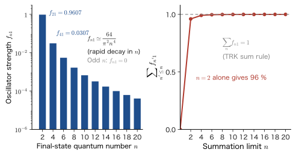

Chapter 54Linear Response and an Introduction to the Kubo Formula — Response Functions, Causality, Kramers–Kronig Relations, and the Complex Permittivity
If we push a playground swing at a steady rhythm, then even a small push makes it swing high when the rhythm matches. If we double the push, the swinging doubles too, and if we stop pushing, it eventually comes to rest. A “reaction” that comes back in proportion to a “stimulus” applied from outside, as in this example, is called in physics a response. The forced damped oscillator, consisting of a mass, a spring, and a resistance (AD 03, “Introductory University Physics,” Chapter 7, Section 7.4), is the representative example: the ratio $\chi=x/F$ of the displacement $x$ to the force $F$ tells us everything, including the resonance peak and the phase lag. The same holds when light shines on a material. A polarization $\bm{P}$ arises inside the material in proportion to the electric field $\bm{E}$ of the light, and their ratio determines the permittivity and the refractive index. That glass is transparent, that metals reflect light, and that dyes absorb particular colors are all manifestations of “the response of matter to an electric field.”
The goal of this chapter is to bring the same way of thinking into quantum mechanics. When the Hamiltonian of a system is $\hat{H}=\hat{H}_0-F(t)\hat{B}$, we derive how the expectation value of a physical quantity $\hat{A}$ changes in response to the external force $F(t)$, starting from the first-order time-dependent perturbation theory prepared in the preceding chapters (Chapter 50, Chapter 51). The result is the convolution $\delta\langle\hat{A}\rangle(t)=\int\chi_{AB}(t-t')F(t')\,\dd t'$, and the response function $\chi_{AB}(t)$ is given by the expectation value of a commutator in the system before the external field is applied, $\chi_{AB}(t)=\dfrac{i}{\hbar}\theta(t)\langle\comm{\hat{A}_H(t)}{\hat{B}_H(0)}\rangle$ (the Kubo formula). The external field $F$ does not appear in this expression. The “reply when the system is struck” is determined by nothing but “the properties of the system before it is struck.”
The response function has three faces. Viewed in the time domain, the cause precedes the effect, so $\chi=0$ for $t\lt0$ (causality). Viewed in the frequency domain, $\chi(\omega)$ has poles at the excitation energies of the system (the Lehmann representation). And viewed in the complex $\omega$ plane, causality makes it analytic in the upper half-plane, and as a result the real and imaginary parts are not independent: once one is known, the other is determined (the Kramers–Kronig relations). If we measure the absorption spectrum (the imaginary part) over the whole range, we can calculate the refractive index (the real part). The reason the refractive index of glass changes with wavelength (a rainbow forms in a prism) lies not in visible light but in the absorption in the far ultraviolet.
This chapter is an introduction to the companion volume “Linear Response Theory (AD 08)” (Contents). We keep the notation as close to AD 08 as possible, but only the sign convention for the coupling to the external field differs (the box in Section 54.2). As examples from materials, we take up the shift of the absorption edge when an electric field is applied to a semiconductor quantum well (the quantum-confined Stark effect), the dispersion of glass, and the reflection of a metal (Al) and the plasma frequency.
- To read off the resonance, the phase lag, and the $Q$ factor from the response function of the classical forced damped oscillator, $\chi(\omega)=1/[m(\omega_0^2-\omega^2-i\gamma\omega)]$, and to write the response as $\delta x(t)=\int\chi(t-t')F(t')\dd t'$
- To derive linear response and the Kubo formula $\chi_{AB}(t)=\dfrac{i}{\hbar}\theta(t)\langle\comm{\hat{A}_H(t)}{\hat{B}_H(0)}\rangle$ from the first-order perturbation of $\hat{H}=\hat{H}_0-F(t)\hat{B}$, and to explain “Why a commutator?”
- To use the adiabatic switching $e^{\eta t}$ and the Fourier transform $\chi(\omega)=\int_0^\infty\chi(t)e^{i(\omega+i\eta)t}\dd t$ (time-Fourier kernel $e^{+i\omega t}$) to verify the Kubo formula for the harmonic oscillator and the two-level system
- To derive the Lehmann representation $\chi_{AB}(\omega)=\dfrac1\hbar\sum_n\Bigl[\dfrac{A_{0n}B_{n0}}{\omega_{n0}-\omega-i\eta}+\dfrac{B_{0n}A_{n0}}{\omega_{n0}+\omega+i\eta}\Bigr]$, and to understand the polarizability, the oscillator strength, and the Thomas–Reiche–Kuhn sum rule $\sum_nf_{n0}=1$
- To show from causality that $\chi(\omega)$ is analytic in the upper half-plane, and to derive from Cauchy's integral formula the Kramers–Kronig relations and the static limit $\chi(0)=\dfrac2\pi\int_0^\infty\dfrac{\mathrm{Im}\,\chi(\omega')}{\omega'}\dd\omega'$
- To use the complex permittivity $\varepsilon=\varepsilon_1+i\varepsilon_2$, the complex refractive index $n+i\kappa=\sqrt{\varepsilon}$, and the absorption coefficient $\alpha_{\mathrm{abs}}=2\omega\kappa/c$ to read spectra with the Lorentz model and the Drude model (the plasma frequency of Al)
- To confirm that the static limit agrees with second-order perturbation theory (the Stark effect, the polarizability), and to estimate the quantum-confined Stark effect $\Delta E_1=-\dfrac{15-\pi^2}{24\pi^4}\dfrac{m^*(e_0\mathcal{E})^2L^4}{\hbar^2}$. To convert correctly for the difference in sign from AD 08 ($f=-F$, $\chi^{\mathrm{R}}=-\chi$)
Source notes: This chapter supplements material that is not in the original notes. Related notes: Yasuhide Mochizuki, “Physics Notes: Quantum Mechanics 3,” pp. 69–71 (following the time dependence in excited states).
54.1 Response to an External Field — From the Classical Damped Oscillator to the Quantum Case
54.1.1 The “strike it and listen for the reply” viewpoint
Many properties of materials can be learned by “applying something from the outside and seeing what comes back.” Apply an electric field to a dielectric, and a polarization comes back. Apply a magnetic field to a magnetic material, and a magnetization comes back. Pass light through glass, and what comes back is how the light propagates (refraction) and how it is weakened (absorption). We call such an “input → system → output” relation a response. If the input is sufficiently weak, the output is proportional to the input. Doubling the input doubles the output, and when two inputs are applied at the same time, the output is the sum of the individual outputs. This is linear response.
The idea of linear response was completed in classical mechanics, long before quantum mechanics. Let us first solve the classical case carefully and obtain the tools called the “response function” and “causality.” Then, in the next section, we show that the same structure holds unchanged in quantum mechanics.
54.1.2 The classical forced damped oscillator — the response function $\chi(\omega)$
Suppose that an object of mass $m$ is attached to a spring with spring constant $k=m\omega_0^2$ and is shaken by an external force $F(t)$ while it experiences a resistance $-m\gamma\dot{x}$ proportional to its velocity. The equation of motion is
\begin{equation} m\ddot{x}+m\gamma\dot{x}+m\omega_0^2x=F(t) \label{eq:54-eom} \end{equation}Here $\omega_0=\sqrt{k/m}$ is the natural angular frequency in the absence of resistance, and $\gamma\ (\gt0)$ is the damping rate (in units of $\mathrm{s^{-1}}$). In AD 03, Chapter 7, Section 7.3, the resistance coefficient was written $n\ [\mathrm{N\,s/m}]$, so the two are related by $n=m\gamma$.
Derivation: When the external force is simple harmonic, the response is proportional to the force
Using complex numbers, we write the external force as $F(t)=\mathrm{Re}\bigl[F_\omega e^{-i\omega t}\bigr]$ ($F_\omega$ is the complex amplitude; the actual force is the real part). Put $x(t)=\mathrm{Re}\bigl[x_\omega e^{-i\omega t}\bigr]$ and substitute into Eq. \eqref{eq:54-eom}. Differentiating $e^{-i\omega t}$ once with respect to time multiplies it by $-i\omega$, and differentiating it twice multiplies it by $(-i\omega)^2=-\omega^2$, so
$$ m\bigl(-\omega^2\bigr)x_\omega+m\gamma\bigl(-i\omega\bigr)x_\omega+m\omega_0^2x_\omega=F_\omega \quad\Longrightarrow\quad m\bigl(\omega_0^2-\omega^2-i\gamma\omega\bigr)\,x_\omega=F_\omega $$(taking the real part is a linear operation, so we may substitute into the equation first and take the real part afterward; this is the same procedure as in AD 03, Section 7.4). Therefore the ratio of the amplitudes is
\begin{equation} x_\omega=\chi(\omega)\,F_\omega,\qquad \chi(\omega)=\frac{1}{m\bigl(\omega_0^2-\omega^2-i\gamma\omega\bigr)} \label{eq:54-chi-cl} \end{equation}We call $\chi(\omega)$ the response function (complex susceptibility) of this system. The transient oscillation (the one determined by the initial conditions) decays as $e^{-\gamma t/2}$ because of the resistance and disappears; only the steady-state solution \eqref{eq:54-chi-cl}, which oscillates at the frequency of the external force, remains.
∎
Caution: Direction of the time factor — $e^{-i\omega t}$ and $e^{+i\omega t}$
In AD 03, we wrote the external force as $f_0e^{i\omega t}$ and solved with it (the denominator becomes $(k-m\omega^2)+in\omega$). This book adopts $e^{-i\omega t}$ as the time factor throughout, to match the phase $e^{-iEt/\hbar}$ of the Schrödinger equation and the plane wave $e^{i(kx-\omega t)}$. Then the imaginary part of the denominator becomes $-i\gamma\omega$, which is the complex conjugate of the AD 03 result. With either convention, the real displacement $x(t)$ that is actually observed is the same. From here on, this book and Linear Response Theory (AD 08) use the $e^{-i\omega t}$ convention. In this convention, $\mathrm{Im}\,\chi(\omega)\gt0$ ($\omega\gt0$) corresponds to absorption (Section 54.3).
Eq. \eqref{eq:54-chi-cl} is the answer for a “force that undergoes simple harmonic motion.” The answer for a force $F(t)$ with arbitrary time dependence is obtained as follows. Regard the force as a pile-up of kicks $F(t')\,\dd t'$, each acting only for a short time $\dd t'$. Since the equation of motion is linear, the answer is the sum of the answers to the individual kicks. If we write $\chi(t)$ for the displacement when a unit impulse is given at time $0$ ($F(t)=\delta(t)$), then $\chi(t)$ is the solution of
\begin{equation} m\ddot{\chi}+m\gamma\dot{\chi}+m\omega_0^2\chi=\delta(t),\qquad\chi(t)=0\quad(t\lt0) \label{eq:54-chi-def} \end{equation}Since the object was at rest until just before time $0$, $\chi=0$ for $t\lt0$. Integrating Eq. \eqref{eq:54-chi-def} across $t=0$, we find that $\chi$ is continuous ($\chi(0)=0$) and that the velocity jumps by the amount of the impulse, $m\dot\chi(0^+)=1$. After that ($t\gt0$), it is a solution of the homogeneous equation; in the case of damped oscillation, $\gamma\lt2\omega_0$, we choose from the general solution $e^{-\gamma t/2}(C_1\cos\Omega t+C_2\sin\Omega t)$ of AD 03, Section 7.3, the one that satisfies $\chi(0)=0$ and $\dot\chi(0)=1/m$, and obtain
\begin{equation} \chi(t)=\theta(t)\,\frac{e^{-\gamma t/2}\sin\Omega t}{m\Omega},\qquad\Omega=\sqrt{\omega_0^2-\frac{\gamma^2}{4}} \label{eq:54-chi-t} \end{equation}Here $\theta(t)$ is the step function ($0$ for $t\lt0$ and $1$ for $t\gt0$). $\chi(t)$ is called the impulse response, or (in mathematics) the Green's function (University Mathematics, Chapter 36, Section 36.1; AD 08, Chapter 2). The answer for an arbitrary force is obtained by adding up the effects of the kicks $F(t')\dd t'$ given at time $t'$, whose influence reaches time $t$ delayed by the time $t-t'$:
\begin{equation} x(t)=\int_{-\infty}^{\infty}\chi(t-t')\,F(t')\,\dd t' \label{eq:54-conv} \end{equation}(a convolution integral). Since $\chi(t-t')=0$ for $t'\gt t$, the upper limit of the integral is effectively $t$, and only forces from earlier times affect the displacement at time $t$. Figure 54.1 shows the response to a short pulsed force. Before the force rises, $x=0$; the response appears delayed relative to the force and oscillates with damping, following the shape of $\chi(t)$. If the pulse is short, the response can be roughly approximated by the total strength of the force (the area $\int F\dd t'$) multiplied by $\chi(t-3)$ (dashed line). (The shorter the pulse, the better the agreement. In the example of this figure, the maximum difference between the two is about 12% of the maximum value of the dashed line.)
![Force, response function, and response. The top panel is a short pulse-like external force F(t) centered at time 3. The middle panel is the response chi(t) to a unit impulse, which is 0 before time 0 and oscillates with damping from time 0 onward, oscillating inside the dashed envelope exp(-gamma t/2)/(m Omega). The bottom panel is the displacement delta x(t) in response to the pulsed force, which is 0 before the force rises, rises with a delay after the force, and oscillates with damping. The dashed line is the impulse approximation and roughly overlaps the solid line](figs/ch54_fig54-1.svg)
We called $\chi(t)$ of Eq. \eqref{eq:54-chi-def} and $\chi(\omega)$ of Eq. \eqref{eq:54-chi-cl} by the same name, but in fact they are related by a Fourier transform.
Definition 54.1: Time and frequency representations of the response function (the Fourier convention of this book)
We define the Fourier transform of a function of time $f(t)$, with the time kernel $e^{+i\omega t}$, by
\begin{equation} \tilde{f}(\omega)=\int_{-\infty}^{\infty}f(t)\,e^{i\omega t}\,\dd t,\qquad f(t)=\frac{1}{2\pi}\int_{-\infty}^{\infty}\tilde{f}(\omega)\,e^{-i\omega t}\,\dd\omega \label{eq:54-ft} \end{equation}Then the time representation $\chi(t)$ and the frequency representation $\chi(\omega)$ of the response function are related by $\chi(\omega)=\displaystyle\int_{-\infty}^{\infty}\chi(t)\,e^{i\omega t}\,\dd t$. The Fourier transform of the convolution \eqref{eq:54-conv} becomes a product: $\tilde{x}(\omega)=\chi(\omega)\tilde{F}(\omega)$.
The reason the time kernel is $e^{+i\omega t}$ can be seen in advance from the derivation above, in which the response was solved with $e^{-i\omega t}$. Insert the force $F(t')=F_\omega e^{-i\omega t'}$ into the convolution \eqref{eq:54-conv} and put $s=t-t'$; since $e^{-i\omega t'}=e^{-i\omega t}\,e^{+i\omega s}$,
$$ x(t)=\int_{-\infty}^{\infty}\chi(s)\,F_\omega e^{-i\omega(t-s)}\dd s=F_\omega e^{-i\omega t}\int_{-\infty}^{\infty}\chi(s)\,e^{+i\omega s}\dd s=\chi(\omega)\,F_\omega e^{-i\omega t} $$and the kernel multiplying $\chi(s)$ naturally becomes $e^{+i\omega s}$ (this is $\chi(\omega)$ of Eq. \eqref{eq:54-chi-cl}). The time factor $e^{-i\omega t}$ of the external force and the kernel $e^{+i\omega s}$ used to bring the response function to the frequency representation have opposite signs.
This convention (the kernel of the forward transform is $e^{+i\omega t}$ and that of the inverse transform is $e^{-i\omega t}$) is consistent with the phases of the plane wave $e^{i(kx-\omega t)}$ and of $\Psi\propto e^{-iEt/\hbar}$. The sign is opposite to that of the kernel $e^{-ipx/\hbar}$ of the spatial Fourier transform $\phi(p)\propto\int\psi(x)e^{-ipx/\hbar}\dd x$. The reason the kernels have opposite signs in time and in space is that in the phase of the plane wave $e^{i(kx-\omega t)}$, $\omega t$ and $kx$ enter with opposite signs. Linear Response Theory (AD 08) uses the same convention.
Derivation: Fourier transforming $\chi(t)$ returns Eq. \eqref{eq:54-chi-cl}
Using $\sin\Omega t=\dfrac{e^{i\Omega t}-e^{-i\Omega t}}{2i}$ in Eq. \eqref{eq:54-chi-t}, for $t\gt0$ we have
$$ \chi(\omega)=\int_0^\infty\frac{e^{-\gamma t/2}\sin\Omega t}{m\Omega}\,e^{i\omega t}\dd t =\frac{1}{2im\Omega}\int_0^\infty\Bigl[e^{i(\omega+\Omega+i\gamma/2)t}-e^{i(\omega-\Omega+i\gamma/2)t}\Bigr]\dd t $$Here, if a complex number $z$ satisfies $\mathrm{Im}\,z\gt0$, then $\displaystyle\int_0^\infty e^{izt}\dd t=\Bigl[\dfrac{e^{izt}}{iz}\Bigr]_0^\infty=\dfrac{i}{z}$ (since $\abs{e^{izt}}=e^{-\mathrm{Im}\,z\,t}\to0$ as $t\to\infty$). In the present case $z=\omega\pm\Omega+i\gamma/2$ has imaginary part $\gamma/2\gt0$, so this can be used.
$$ \chi(\omega)=\frac{1}{2im\Omega}\left[\frac{i}{\omega+\Omega+i\gamma/2}-\frac{i}{\omega-\Omega+i\gamma/2}\right] =\frac{1}{2m\Omega}\cdot\frac{(\omega-\Omega+i\gamma/2)-(\omega+\Omega+i\gamma/2)}{(\omega+i\gamma/2)^2-\Omega^2} =\frac{-1}{m}\cdot\frac{1}{(\omega+i\gamma/2)^2-\Omega^2} $$The denominator is $(\omega+i\gamma/2)^2-\Omega^2=\omega^2+i\gamma\omega-\dfrac{\gamma^2}{4}-\Omega^2=\omega^2+i\gamma\omega-\omega_0^2$, so $\chi(\omega)=\dfrac{1}{m(\omega_0^2-\omega^2-i\gamma\omega)}$, which agrees with Eq. \eqref{eq:54-chi-cl}.
∎
The zeros of the denominator $\omega_0^2-\omega^2-i\gamma\omega$ of the response function $\chi(\omega)$ are at $\omega=\pm\Omega-i\gamma/2$, both of which lie in the lower half-plane (negative imaginary part). This is the manifestation, in the complex plane, of the fact that $\chi(t)$ takes nonzero values only for $t\gt0$. In Section 54.4, we derive the Kramers–Kronig relations from this fact.
Example 54.1: Resonance, phase lag, and the $Q$ factor
For the damped oscillator with $m=1$, $\omega_0=1$ (arbitrary units), and $\gamma=0.4$, find (1) the angular frequency $\omega_{\mathrm r}$ at which $\abs{\chi(\omega)}$ is maximum, and the maximum value; (2) the value of $\chi$ at $\omega=\omega_0$, and the phase by which the response lags the external force; and (3) $Q=\omega_0/\gamma$ and the width of the resonance.
Solution. (1) We have $\abs{\chi}^2=1/\bigl\{m^2D(\omega)\bigr\}$ with $D(\omega)=(\omega_0^2-\omega^2)^2+\gamma^2\omega^2$, and $\abs{\chi}$ is maximum when $D$ is minimum. Letting $u=\omega^2$, we have $D=(\omega_0^2-u)^2+\gamma^2u$, and $\dfrac{\dd D}{\dd u}=-2(\omega_0^2-u)+\gamma^2=0$ gives $u=\omega_0^2-\dfrac{\gamma^2}{2}$, that is,
$$ \omega_{\mathrm r}=\sqrt{\omega_0^2-\frac{\gamma^2}{2}}=\sqrt{1-0.08}=0.9592 $$(this is slightly lower than $\omega_0$). At that frequency, $D_{\min}=\gamma^2\omega_0^2-\dfrac{\gamma^4}{4}=\gamma^2\Bigl(\omega_0^2-\dfrac{\gamma^2}{4}\Bigr)=0.16\times0.96=0.1536$, so $\abs{\chi}_{\max}=\dfrac{1}{\sqrt{0.1536}}=2.552$. This is about 2.55 times the static response $\chi(0)=1/(m\omega_0^2)=1$.
(2) At $\omega=\omega_0$ we have $\omega_0^2-\omega^2=0$, so $\chi(\omega_0)=\dfrac{1}{-i\gamma m\omega_0}=\dfrac{i}{m\gamma\omega_0}=2.5\,i$. Writing $\chi=\abs{\chi}e^{i\varphi}$, the displacement in response to an external force $F\cos\omega t=\mathrm{Re}[Fe^{-i\omega t}]$ is $x(t)=\abs{\chi}F\cos(\omega t-\varphi)$, so the response lags the external force by the phase $\varphi$. Since $\chi(\omega_0)$ is purely imaginary, $\varphi=\pi/2$, and at resonance the displacement lags the external force by $1/4$ of a period ($x=2.5F\sin\omega_0t$). This is the state in which “when the external force is strongest, the object is passing through the equilibrium position at high speed, the velocity is in phase with the external force, and the object is receiving energy against the resistance.”
(3) We have $Q=\omega_0/\gamma=2.5$. Since $\abs{\chi(\omega_0)}/\chi(0)=\dfrac{1/(m\gamma\omega_0)}{1/(m\omega_0^2)}=\dfrac{\omega_0}{\gamma}=Q$, $Q$ is also “how many times the static response the response at resonance is.” The two angular frequencies at which the resonance curve $\abs{\chi}^2$ falls to half its maximum value are $\omega=0.727,\ 1.145$, and the full width at half maximum is $0.419$, nearly equal to $\gamma=0.4$. In general, if the damping is weak ($\gamma\ll\omega_0$), the full width at half maximum is $\gamma$, and $Q=\omega_0/\gamma$ expresses the sharpness of the resonance. The phase changes from $0$ at low frequencies (in phase with the force), through $\pi/2$ at $\omega_0$, to $\pi$ at high frequencies (out of phase) (Figure 54.2).
![Resonance curves and phase of a damped oscillator. The left panel plots m omega0 squared times the absolute value of chi against the ratio of the angular frequency omega to omega0; for gamma equal to 0.15, 0.4, and 1.0, each curve starts from the static value 1 and forms a peak near omega0, which is higher and sharper the smaller gamma is. The right panel shows the phase lag arg chi divided by pi, which approaches 0 at low frequencies, equals one half at omega0, and approaches 1 at high frequencies; the smaller gamma is, the more abruptly it changes near omega0](figs/ch54_fig54-2.svg)
Example 54.2: Response to a step force — relation to the static response
Starting at time $0$, a constant force $F_0$ is applied ($F(t)=F_0\theta(t)$). (1) Find $x(t)$ using Eq. \eqref{eq:54-conv}; (2) show that the displacement as $t\to\infty$ becomes $F_0\chi(0)$; and (3) for $m=1$, $\omega_0=1$, $\gamma=0.4$, show how many times the final value the maximum displacement is, and when it occurs.
Solution. (1) Substituting $F(t')=F_0\theta(t')$ into Eq. \eqref{eq:54-conv}, we have $F=0$ for $t'\lt0$ and $\chi(t-t')=0$ for $t'\gt t$, so $x(t)=F_0\displaystyle\int_0^{t}\chi(t-t')\dd t'=F_0\int_0^{t}\chi(s)\dd s$ (we set $s=t-t'$). We integrate Eq. \eqref{eq:54-chi-t}. Differentiating the right-hand side of the following equation with respect to $t$, we obtain
$$ \frac{\dd}{\dd t}\Bigl\{1-e^{-\gamma t/2}\Bigl(\cos\Omega t+\frac{\gamma}{2\Omega}\sin\Omega t\Bigr)\Bigr\} =e^{-\gamma t/2}\Bigl[\Bigl(\frac{\gamma^2}{4\Omega}+\Omega\Bigr)\sin\Omega t\Bigr]=\frac{\omega_0^2}{\Omega}\,e^{-\gamma t/2}\sin\Omega t $$(the $\cos$ terms cancel because $\dfrac\gamma2-\dfrac\gamma2=0$, and we used $\dfrac{\gamma^2}{4}+\Omega^2=\omega_0^2$), so that
$$ x(t)=\frac{F_0}{m\omega_0^2}\Bigl[1-e^{-\gamma t/2}\Bigl(\cos\Omega t+\frac{\gamma}{2\Omega}\sin\Omega t\Bigr)\Bigr] $$(this satisfies $x=0$ at $t=0$). (2) As $t\to\infty$ the exponential function becomes $0$, and $x\to F_0/(m\omega_0^2)=F_0\chi(0)$, where $\chi(0)=\displaystyle\int_0^\infty\chi(t)\dd t$. The final displacement under a constant force is the position at which the spring balances $F_0$, and it equals the value of the response function at $\omega=0$. (3) The velocity $\dot{x}\propto\chi(t)\propto\sin\Omega t$ first becomes $0$ at $t=\pi/\Omega$, where $\cos\Omega t=-1$ and $\sin\Omega t=0$, so $x_{\max}=x_\infty\bigl[1+e^{-\pi\gamma/(2\Omega)}\bigr]$. With $\Omega=\sqrt{1-0.04}=0.9798$, we have $\pi\gamma/(2\Omega)=0.6413$ and $e^{-0.6413}=0.5266$; therefore $x_{\max}=1.527\,x_\infty$, and it occurs at $t=\pi/\Omega=3.21$ (in units of $1/\omega_0$). For a step force, the displacement overshoots the final value and converges to it while undergoing damped oscillation.
54.1.3 The question in quantum mechanics — $\hat{H}=\hat{H}_0-F(t)\hat{B}$
We apply a weak external force to a quantum-mechanical system. The classical force $F(t)$ of the previous subsection was coupled to the system through the potential energy $-F\,x$ (the force is obtained from the potential energy $V=-Fx$ as $-\partial V/\partial x=F$). Generalizing this, suppose that the Hamiltonian is
\begin{equation} \hat{H}(t)=\hat{H}_0+\hat{H}_1(t),\qquad\hat{H}_1(t)=-F(t)\,\hat{B} \label{eq:54-H1} \end{equation}Here $\hat{H}_0$ is the time-independent Hamiltonian in the absence of the external field (it need not have been solved), $\hat{B}$ is a Hermitian operator that determines where the external field couples to the system, and $F(t)$ is a real function (just a number) that represents the time dependence of the strength of the external field. $F$ and $\hat{B}$ are a “pair whose product is an energy.” Representative pairs are shown in Table 54.1.
| External field $F(t)$ | Coupled operator $\hat{B}$ | $\hat{H}_1$ | Example of $\hat{A}$ measured as the response |
|---|---|---|---|
| External force $F$ | Position $\hat{x}$ | $-F\hat{x}$ | Position $\hat{x}$ |
| Electric field $\bm{E}(t)$ | Electric dipole moment $\hat{\bm{d}}$ (for an electron, $\hat{\bm{d}}=-e_0\hat{\bm{r}}$) | $-\hat{\bm{d}}\cdot\bm{E}$ | Polarization (dipole moment) $\hat{\bm{d}}$ |
| Magnetic flux density $\bm{B}(t)$ | Magnetic moment $\hat{\bm{\mu}}$ | $-\hat{\bm{\mu}}\cdot\bm{B}$ | Magnetization (magnetic moment) $\hat{\bm{\mu}}$ |
The question is the following. The system is initially in the ground state $\ket{0}$ of $\hat{H}_0$ (or in a thermal equilibrium state), and the external field is then applied as time goes on. How far does the expectation value $\langle\hat{A}\rangle(t)=\mel{\psi(t)}{\hat{A}}{\psi(t)}$ of the physical quantity $\hat{A}$ deviate from its value $\langle\hat{A}\rangle_0$ in the absence of the external field? Denoting the deviation by $\delta\langle\hat{A}\rangle(t)=\langle\hat{A}\rangle(t)-\langle\hat{A}\rangle_0$, linear response theory is the theory that finds it to first order in $F$.
Definition 54.2: Linear response and the response function $\chi_{AB}(t)$
Suppose that the change in the expectation value of $\hat{A}$ under the external field $\hat{H}_1=-F(t)\hat{B}$ can be written, to first order in $F$, as
\begin{equation} \delta\langle\hat{A}\rangle(t)=\int_{-\infty}^{\infty}\chi_{AB}(t-t')\,F(t')\,\dd t',\qquad\chi_{AB}(t)=0\quad(t\lt0) \label{eq:54-lr} \end{equation}Then $\chi_{AB}(t)$ is called the response function (or the retarded response function) for striking the system with $\hat{B}$ and measuring with $\hat{A}$. The Fourier transform $\chi_{AB}(\omega)=\int\chi_{AB}(t)e^{i\omega t}\dd t$ is called the susceptibility.
Eq. \eqref{eq:54-lr} has exactly the same form as the classical Eq. \eqref{eq:54-conv}. Let us check the three premises that make Eq. \eqref{eq:54-lr} hold.
- Linearity: The response is proportional to the external field $F$ (the external field is weak). The response to the sum of two external fields is the sum of the respective responses.
- Time-translation invariance: If the time at which the external field is applied is shifted, the response is merely shifted by the same amount. Since the Hamiltonian $\hat{H}_0$ of the system is time-independent, $\chi_{AB}$ depends only on the difference $t-t'$ between $t$ and $t'$.
- Causality: The external field at time $t'$ affects the physical quantity only at times $t\gt t'$. In other words, $\chi_{AB}=0$ when $t\lt t'$, that is, when the argument of $\chi_{AB}(t-t')$ is negative.
In quantum mechanics these are not assumptions but are derived as consequences of the Schrödinger equation (in the next section). Note also that, unlike in classical mechanics, the measured quantity $\hat{A}$ and the quantity $\hat{B}$ that strikes the system may in general be different operators. Examples are applying an electric field and measuring a current (conductivity), or applying a magnetic field and measuring an electric polarization (the magnetoelectric effect). The case $\hat{A}=\hat{B}$ is a special one; the classical oscillator example, in which we strike the position and measure the position, is of this kind.
Note on notation: Symbols that are easy to confuse in this chapter
- $\chi$: A general response function is written $\chi_{AB}$ (two subscripts). The electric susceptibility for an electric field (polarization $\bm{P}=\varepsilon_0\chi_{\mathrm e}\bm{E}$) is written $\chi_{\mathrm e}$, with the subscript $\mathrm{e}$ attached (Section 54.5). These are quantities distinct from the spin orbital $\chi_i$ (from Chapter 33 on; the subscript is the number of the orbital). The function of time $\chi(t)$ and the function of frequency $\chi(\omega)$ are distinguished by their arguments.
- $\alpha$: The polarizability is $\alpha_{\mathrm p}$, the absorption coefficient is $\alpha_{\mathrm{abs}}$, and the fine-structure constant is $\alpha$ (not used in this chapter).
- $F$ and $\mathcal{E}$: $F(t)$ is the generalized external force. The strength of the electric field is written $\mathcal{E}$ (in Chapters 27 and 28 the electric field was written $F$). The electric field vector is $\bm{E}$; $\hat{B}$ (with a hat, an operator) and the magnetic flux density $\bm{B}$ (boldface) are different things.
- $e_0$: The elementary charge ($e_0=1.602\,176\,634\times10^{-19}\ \mathrm{C}$). $e$ is Napier's number (the $e$ in $e^{-i\omega t}$).
- $\eta$: The adiabatic switching factor (a small positive number, with $\eta\to+0$ at the end). It is distinct from the damping rate $\gamma$ (a finite physical quantity).
- $\theta$: Used only for the step function $\theta(t)$ (the dimensionless parameter in Example 54.4 is written $a$, and the phase of the reflection in Section 54.4 is written $\phi_{\mathrm r}(\omega)$).
- $n$, $N$, $\mathcal{N}$: The refractive index $n$ and the complex refractive index $N=n+i\kappa$ (Section 54.5) are quantities distinct from the state label $n$ and the number of electrons $N$ (sum rule). The number density of a gas $\mathcal{N}$ (Section 54.5.1) and the number density of conduction electrons $n_{\mathrm e}$ (Section 54.5.5) are quantities of the same kind (the number of particles per unit volume).
54.1.4 Why do excited states appear?
Here we note one circumstance specific to quantum mechanics. As we saw in Chapter 49, Section 49.1, an eigenstate (stationary state) of $\hat{H}_0$ keeps the same probability distribution as time passes. A system in the ground state does nothing if there is no external field. Only when the external field $-F(t)\hat{B}$ is applied does the state start to move away from the ground state $\ket{0}$. If we consider how it moves using first-order perturbation theory, the external field mixes the excited state $\ket{n}$ into the ground state in an amount proportional to $\mel{n}{\hat{B}}{0}$ (the same structure as the first-order correction to the wave function in Chapter 27). The change in the expectation value of $\hat{A}$ in the mixed state is a sum over the processes “mix from the ground state into the excited state (by $\hat{B}$) and return from the excited state to the ground state (by $\hat{A}$),” namely $\mel{0}{\hat{A}}{n}\mel{n}{\hat{B}}{0}$. That is, the magnitude of the response is determined by matrix elements through the excited states.
From this circumstance, two things follow. (i) The excitation energy $\hbar\omega_{n0}=E_n-E_0$ appears as a “pole” (resonance) of the response function. This is because when the frequency of the external field matches the excitation energy, the excited state is strongly mixed in (Section 54.3). (ii) If $\mel{n}{\hat{B}}{0}=0$ holds for all $n$ (for example, when $\hat{B}$ commutes with $\hat{H}_0$ and the ground state is an eigenstate of $\hat{B}$), the external field causes no change in the state, and the response is $0$.
No such story of excited states arose for the classical oscillator, but for the harmonic oscillator (Example 54.3 in Section 54.2), only the first excited state is mixed into the ground state, and the result coincides with the classical response function. In the next section we prove this for the general case.
54.2 The Kubo Formula — From First-Order Perturbation Theory
54.2.1 The simplest case — giving the system a kick
First, we compute without approximation the case in which the external field is “a sharp kick at the single instant $t'=0$.” Let $F(t)=F_0\,\delta(t)$ ($F_0$ corresponds to the impulse). Until just before time $0$, the system was in the ground state $\ket{0}$ of $\hat{H}_0$. During the infinitesimally short time in which the kick acts, on the right-hand side of the Schrödinger equation
$$ i\hbar\frac{\partial}{\partial t}\ket{\psi(t)}=\bigl[\hat{H}_0-F_0\delta(t)\hat{B}\bigr]\ket{\psi(t)} $$the $\delta$-function term is far larger than the $\hat{H}_0$ term. We therefore neglect $\hat{H}_0$ and integrate across $t=0$ (from $-0$ to $+0$); from $\dfrac{\partial}{\partial t}\ket{\psi}=\dfrac{iF_0}{\hbar}\delta(t)\hat{B}\ket{\psi}$ we find that the state immediately after the kick is
\begin{equation} \ket{\psi(0^+)}=e^{+iF_0\hat{B}/\hbar}\ket{0} \label{eq:54-kick} \end{equation}Here, because $\hat{B}$ is a time-independent operator, the integral can be carried out in exponential form. For example, if $\hat{B}=\hat{x}$, then $e^{iF_0\hat{x}/\hbar}$ is an operator that increases the momentum by $F_0$ (the operation of multiplying the wave function by the phase $e^{iF_0x/\hbar}$), which corresponds to having given an impulse $F_0$.
After the kick ($t\gt0$) there is no external field, so the state evolves in time under $\hat{H}_0$ alone: $\ket{\psi(t)}=e^{-i\hat{H}_0t/\hbar}\ket{\psi(0^+)}$. Using $\hat{A}_H(t)=e^{i\hat{H}_0t/\hbar}\hat{A}e^{-i\hat{H}_0t/\hbar}$ (the Heisenberg picture with respect to $\hat{H}_0$, without the external field; Chapter 50), the expectation value of a physical quantity $\hat{A}$ can be written as
$$ \langle\hat{A}\rangle(t)=\bra{0}\,e^{-iF_0\hat{B}/\hbar}\;\hat{A}_H(t)\;e^{+iF_0\hat{B}/\hbar}\,\ket{0} $$Let us expand to first order, assuming that $F_0$ is small. Setting $X=iF_0\hat{B}/\hbar$, we have $e^{-X}\hat{A}_He^{X}=(1-X+\cdots)\hat{A}_H(1+X+\cdots)=\hat{A}_H+\hat{A}_HX-X\hat{A}_H+\cdots=\hat{A}_H+\comm{\hat{A}_H}{X}+\cdots$. Note here that a commutator appeared naturally. Therefore
\begin{equation} \langle\hat{A}\rangle(t)=\bra{0}\hat{A}_H(t)\ket{0}+\frac{iF_0}{\hbar}\bra{0}\comm{\hat{A}_H(t)}{\hat{B}}\ket{0}+O(F_0^2) \label{eq:54-kick-exp} \end{equation}The first term is a time-independent value $\langle\hat{A}\rangle_0$: since $\ket{0}$ is an eigenstate of $\hat{H}_0$ ($\hat{H}_0\ket{0}=E_0\ket{0}$), the phases $e^{iE_0t/\hbar}e^{-iE_0t/\hbar}=1$ cancel each other. In the end, the response to the kick is as follows.
$$ \delta\langle\hat{A}\rangle(t)=F_0\cdot\frac{i}{\hbar}\bra{0}\comm{\hat{A}_H(t)}{\hat{B}}\ket{0}\qquad(t\gt0) $$If we set $F(t')=F_0\delta(t')$ in the definition in Eq. \eqref{eq:54-lr}, we get $\delta\langle\hat{A}\rangle(t)=F_0\chi_{AB}(t)$; comparing the two, we obtain $\chi_{AB}(t)=\dfrac{i}{\hbar}\bra{0}\comm{\hat{A}_H(t)}{\hat{B}}\ket{0}$ for $t\gt0$. For $t\lt0$ we are before the kick, so $\chi_{AB}=0$. Furthermore, a general external field $F(t)$ is a superposition (linearity) of kicks $F(t')\dd t'$, so the answer is the convolution in Eq. \eqref{eq:54-lr}.
54.2.2 A general external field — first-order time-dependent perturbation theory
We now check directly, using the perturbation theory prepared in the preceding chapters, that the above result also holds for a general $F(t)$ that is not a kick. This calculation makes clear where the “first order” of perturbation theory comes in, so it is the starting point of linear response theory.
We assume that the external field is switched on slowly from the infinite past (adiabatic switching, Chapter 50, Section 50.6):
\begin{equation} \hat{H}_1(t)=-F(t)\,e^{\eta t}\,\hat{B},\qquad\eta\to+0 \label{eq:54-H1-ad} \end{equation}Since $e^{\eta t}\to0$ as $t\to-\infty$, the external field is $0$ there, and we can assert that the system is in the ground state $\ket{0}$ of $\hat{H}_0$. We set $\eta$ to $0$ at the end (at any finite time $e^{\eta t}\to1$, so the value of the external field does not change).
In the interaction picture (Chapter 50), the state can be written $\ket{\psi_I(t)}=\hat{U}(t,-\infty)\ket{0}$, and the time-evolution operator satisfies $i\hbar\dfrac{\partial}{\partial t}\hat{U}=\hat{H}_{1I}(t)\hat{U}$. Since we keep the external field only up to first order in $F$, truncating the Dyson series at first order gives
\begin{equation} \hat{U}(t,-\infty)\simeq1-\frac{i}{\hbar}\int_{-\infty}^{t}\hat{H}_{1I}(t')\,\dd t'=1+\frac{i}{\hbar}\int_{-\infty}^{t}F(t')\,e^{\eta t'}\hat{B}_H(t')\,\dd t' \label{eq:54-U1} \end{equation}Here $\hat{H}_{1I}(t')=-F(t')e^{\eta t'}\hat{B}_H(t')$, and the operator $\hat{B}_I(t')$ in the interaction picture is the same as the Heisenberg-picture operator $\hat{B}_H(t')$ with respect to $\hat{H}_0$ without the external field, so henceforth we write $\hat{B}_H(t')$. In the interaction picture the expectation value can be written $\langle\hat{A}\rangle(t)=\mel{\psi_I(t)}{\hat{A}_H(t)}{\psi_I(t)}=\mel{0}{\hat{U}^\dagger\hat{A}_H(t)\hat{U}}{0}$. Here $\hat{U}^\dagger$ is the Hermitian conjugate of Eq. \eqref{eq:54-U1}; since $i\to-i$, $F,\eta$ are real, and $\hat{B}_H$ is Hermitian,
$$ \hat{U}^\dagger(t,-\infty)\simeq1-\frac{i}{\hbar}\int_{-\infty}^{t}F(t')\,e^{\eta t'}\hat{B}_H(t')\,\dd t' $$Substituting into $\hat{U}^\dagger\hat{A}_H\hat{U}$ while keeping the order of the products, and collecting the terms up to first order in $F$, we obtain
\begin{align} \delta\langle\hat{A}\rangle(t)&=\underbrace{-\frac{i}{\hbar}\int_{-\infty}^{t}F(t')e^{\eta t'}\bra{0}\hat{B}_H(t')\hat{A}_H(t)\ket{0}\dd t'}_{\text{from }\hat{U}^\dagger\text{ (bra side)}} +\underbrace{\frac{i}{\hbar}\int_{-\infty}^{t}F(t')e^{\eta t'}\bra{0}\hat{A}_H(t)\hat{B}_H(t')\ket{0}\dd t'}_{\text{from }\hat{U}\text{ (ket side)}} \notag\\ &=\frac{i}{\hbar}\int_{-\infty}^{t}\bra{0}\comm{\hat{A}_H(t)}{\hat{B}_H(t')}\ket{0}\,F(t')\,e^{\eta t'}\,\dd t' \label{eq:54-first} \end{align}Here the $F^0$ term is $\langle\hat{A}\rangle_0$, and the terms of order $F^2$ and higher are discarded in linear response. The two terms, which have opposite signs and opposite operator orders, combine into a commutator. This is the computational answer to “why does a commutator appear?”
Finally, we show that the expectation value of the commutator in the integrand depends only on the time difference $t-t'$. Using the fact that $\ket{0}$ is an eigenstate of $\hat{H}_0$, we have $\bra{0}e^{i\hat{H}_0t/\hbar}=e^{iE_0t/\hbar}\bra{0}$ and $e^{-i\hat{H}_0t'/\hbar}\ket{0}=e^{-iE_0t'/\hbar}\ket{0}$, so
$$ \bra{0}\hat{A}_H(t)\hat{B}_H(t')\ket{0}=e^{iE_0(t-t')/\hbar}\bra{0}\hat{A}\,e^{-i\hat{H}_0(t-t')/\hbar}\hat{B}\ket{0}=\bra{0}\hat{A}_H(t-t')\hat{B}_H(0)\ket{0} $$Here, along the way, the exponentials in the middle of $e^{i\hat{H}_0t/\hbar}\hat{A}e^{-i\hat{H}_0t/\hbar}e^{i\hat{H}_0t'/\hbar}\hat{B}e^{-i\hat{H}_0t'/\hbar}$ were combined into $e^{-i\hat{H}_0(t-t')/\hbar}$. The same holds for the $\hat{B}_H(t')\hat{A}_H(t)$ term. Multiplying by the step function $\theta(t-t')$, extending the upper limit of the integral to $+\infty$, and letting $\eta\to+0$, we obtain the form of Eq. \eqref{eq:54-lr}. Let us summarize.
Theorem 54.1: Kubo formula
For a system with $\hat{H}=\hat{H}_0-F(t)\hat{B}$ that starts from the ground state $\ket{0}$ of $\hat{H}_0$ in the absence of the external field, the response to first order in $F$ is $\delta\langle\hat{A}\rangle(t)=\displaystyle\int_{-\infty}^{\infty}\chi_{AB}(t-t')F(t')\dd t'$, and the response function is
\begin{equation} \chi_{AB}(t)=\frac{i}{\hbar}\,\theta(t)\,\bra{0}\comm{\hat{A}_H(t)}{\hat{B}_H(0)}\ket{0} \label{eq:54-kubo} \end{equation}Here $\hat{A}_H(t)=e^{i\hat{H}_0t/\hbar}\hat{A}e^{-i\hat{H}_0t/\hbar}$ is the Heisenberg-picture operator with respect to $\hat{H}_0$, without the external field. At finite temperature, replace $\bra{0}\cdots\ket{0}$ by the thermal-equilibrium expectation value $\langle\cdots\rangle=\mathrm{Tr}\bigl[e^{-\hat{H}_0/k_{\mathrm B}T}\cdots\bigr]/Z$.
This formula was derived by Ryogo Kubo in 1957 as a general theory of statistical mechanics.
The derivation is the same at finite temperature. The density operator of thermal equilibrium, $\hat\rho_0=e^{-\hat{H}_0/k_{\mathrm B}T}/Z$, commutes with $\hat{H}_0$ and is therefore time-independent (stationary), so the step in the above argument where we used that $\ket{0}$ is an eigenstate (time-translation invariance) holds as it stands.
Dimension check. Since the unit of $\hbar$ is $\mathrm{J\,s}$ and the unit of the expectation value of the commutator is $[A][B]$ (the product of the units of $\hat{A},\hat{B}$), the unit of $\chi_{AB}(t)$ is $[A][B]/(\mathrm{J\,s})$. Multiplying by $F(t')\dd t'$ (unit $[F]\,\mathrm{s}$) in Eq. \eqref{eq:54-lr} gives $[A][B][F]/\mathrm{J}$, and since $[F][B]=\mathrm{J}$ ($F$ and $\hat{B}$ are a pair whose product is an energy), this agrees with $[A]$. The frequency representation $\chi_{AB}(\omega)=\int\chi_{AB}(t)e^{i\omega t}\dd t$ has one further factor of time, so its unit becomes $[A][B]/\mathrm{J}$ (example: the polarizability between electric dipoles, $\alpha_{\mathrm p}=\chi_{dd}$, has the unit $(\mathrm{C\,m})^2/\mathrm{J}=\mathrm{C\,m^2/V}$).
How to read this equation — the response is determined by “the properties of the system before it is struck” alone
The external field $F$ does not appear on the right-hand side of Eq. \eqref{eq:54-kubo}. All that appears is the expectation value of the commutator of $\hat{A}$ at time $t$ and $\hat{B}$ at time $0$ in the system before the external field is applied (the system that evolves in time under $\hat{H}_0$). As long as the external field is weak, “the reply when the system is struck” is determined solely by “the properties of the fluctuations of the system before it is struck.” This fact is the starting point of linear response theory, and it makes it possible, for example, to obtain the conductivity and the permittivity from quantities of the equilibrium state, which are easy to calculate. Figure 54.3 shows that the response is “the sum of past strikes.”
54.2.3 Why the commutator? — three viewpoints
Discussion: Why the commutator appears
(a) Computational reason (unitarity). The expectation value $\mel{0}{\hat{U}^\dagger\hat{A}_H\hat{U}}{0}$ receives first-order terms from the $\hat{U}$ side and from the $\hat{U}^\dagger$ side. If the time evolution is unitary, the first-order term of $\hat{U}^\dagger$ has the opposite sign and the reverse order of the first-order term of $\hat{U}$ (it is the Hermitian conjugate). The sum of two terms with opposite signs and reversed order is a commutator (Eq. \eqref{eq:54-first}).
(b) Physical reason (noncommutativity of measurements). The response is the difference between “striking with $\hat{B}$ and then measuring $\hat{A}$” and “measuring $\hat{A}$ without striking.” If $\hat{A}_H(t)$ and $\hat{B}$ commute, the strike has no effect at all on the measured value of $\hat{A}$. That is, the response is $0$. Conversely, when they do not commute, striking with $\hat{B}$ disturbs the value of $\hat{A}$, and that disturbance is the response (the physics of the uncertainty relation: if one of two physical quantities that do not commute is manipulated, the value of the other is disturbed).
(c) Classical limit. In classical mechanics, the Poisson bracket $\{A,B\}=\dfrac{\partial A}{\partial x}\dfrac{\partial B}{\partial p}-\dfrac{\partial A}{\partial p}\dfrac{\partial B}{\partial x}$ (AD 03, Chapter 46, Section 46.3 (in Japanese)) corresponds to the commutator of quantum mechanics as $\comm{\hat{A}}{\hat{B}}\to i\hbar\{A,B\}$ (the same correspondence as in the Heisenberg equation of motion in Chapter 50). The Kubo formula then becomes $\chi_{AB}(t)\to-\theta(t)\,\bigl\langle\{A(t),B(0)\}\bigr\rangle$. For example, for a harmonic oscillator with $A=B=x$ and $x(t)=x\cos\omega_0t+\dfrac{p}{m\omega_0}\sin\omega_0t$, we have $\{x(t),x\}=\dfrac{\sin\omega_0t}{m\omega_0}\{p,x\}=-\dfrac{\sin\omega_0t}{m\omega_0}$, so that $\chi(t)=\theta(t)\dfrac{\sin\omega_0t}{m\omega_0}$ agrees with the $\gamma\to0$ limit of the classical Eq. \eqref{eq:54-chi-t}. Since $\hbar$ drops out, we see that the quantum response function is a more general expression that contains the classical response function.
54.2.4 Fourier transform and the convergence factor $\eta$
Expressing the response function in terms of frequency simplifies the equations. Let the external field be accompanied by the factor $e^{\eta t'}$, and let $F(t')=F_\omega e^{-i\omega t'}$ ($F_\omega$ is a constant). Then $F(t')e^{\eta t'}=F_\omega e^{-i(\omega+i\eta)t'}$, and, setting $s=t-t'$ in Eq. \eqref{eq:54-lr}, the response becomes
$$ \delta\langle\hat{A}\rangle(t)=\int_{-\infty}^{t}\chi_{AB}(t-t')\,F_\omega e^{-i(\omega+i\eta)t'}\dd t' =F_\omega e^{-i(\omega+i\eta)t}\int_0^\infty\chi_{AB}(s)\,e^{i(\omega+i\eta)s}\dd s $$We define the integral on the right-hand side as $\chi_{AB}(\omega)$:
\begin{equation} \chi_{AB}(\omega)=\int_0^\infty\chi_{AB}(t)\,e^{i(\omega+i\eta)t}\,\dd t\qquad(\eta\to+0) \label{eq:54-chi-w} \end{equation}This is the Fourier transform of Definition 54.1 (since $\chi(t)$ is $0$ for $t\lt0$, the integral runs from $0$) with the convergence factor $e^{-\eta t}$ added. The convergence factor plays two roles. (i) When $\chi_{AB}(t)$ is a non-decaying oscillation (for example $\sin\omega_0t$), $\displaystyle\int_0^\infty e^{i\omega t}\dd t$ does not converge for real $\omega$. Replacing $\omega\to\omega+i\eta$ gives $\abs{e^{i(\omega+i\eta)t}}=e^{-\eta t}\to0$, and the integral converges. (ii) It is a direct consequence of switching on the external field adiabatically ($e^{\eta t}$), and corresponds to the statement that “the memory of the time at which the external field was switched on disappears, and only the steady-state response remains.” The result is that, in the limit $\eta\to+0$, $\chi_{AB}(\omega)$ is the value obtained by approaching the real axis from the upper half-plane (positive imaginary part) of the complex $\omega$ plane. This information, “from the upper half-plane,” becomes essential in Section 54.4.
The response itself is $\delta\langle\hat{A}\rangle(t)=\chi_{AB}(\omega)F_\omega e^{-i\omega t}$, which oscillates at the same frequency as the external field, with its amplitude and phase determined by $\chi_{AB}(\omega)$ (the same structure as the classical Eq. \eqref{eq:54-chi-cl}).
54.2.5 Illustration: The harmonic oscillator and the two-level system
Example 54.3: The response function of the quantum harmonic oscillator — the same answer as the classical one
An external force $F(t)$ is applied, through $\hat{H}_1=-F(t)\hat{x}$, to the harmonic oscillator with $\hat{H}_0=\dfrac{\hat{p}^2}{2m}+\dfrac12m\omega_0^2\hat{x}^2$. Find $\chi_{xx}(t)$ and $\chi_{xx}(\omega)$ with the Kubo formula, and compare them with the classical result.
Solution. We use the equation of Chapter 50 (the Heisenberg picture of the harmonic oscillator), $\hat{x}_H(t)=\hat{x}\cos\omega_0t+\dfrac{\hat{p}}{m\omega_0}\sin\omega_0t$. Since $\comm{\hat{x}}{\hat{x}}=0$ and $\comm{\hat{p}}{\hat{x}}=-i\hbar$, we have
$$ \comm{\hat{x}_H(t)}{\hat{x}_H(0)}=\frac{\sin\omega_0t}{m\omega_0}\comm{\hat{p}}{\hat{x}}=-\frac{i\hbar}{m\omega_0}\sin\omega_0t $$The right-hand side is a number that contains no operators (a c-number), so the state in which the expectation value is taken can be anything (the same for the ground state, for an excited state, and at finite temperature). Substituting into the Kubo formula \eqref{eq:54-kubo}, we obtain
$$ \chi_{xx}(t)=\frac{i}{\hbar}\theta(t)\Bigl(-\frac{i\hbar}{m\omega_0}\sin\omega_0t\Bigr)=\theta(t)\,\frac{\sin\omega_0t}{m\omega_0} $$This agrees with the impulse response of the classical harmonic oscillator without damping ($\gamma\to0$ and $\Omega\to\omega_0$ in Eq. \eqref{eq:54-chi-t}). The $\hbar$ has disappeared. For the Fourier transform, we use $\sin\omega_0t=(e^{i\omega_0t}-e^{-i\omega_0t})/2i$ and, for $\mathrm{Im}\,z\gt0$, the formula $\displaystyle\int_0^\infty e^{izt}\dd t=\dfrac{i}{z}$ with $z=\omega\pm\omega_0+i\eta$, which gives
$$ \chi_{xx}(\omega)=\frac{1}{2im\omega_0}\left[\frac{i}{\omega+\omega_0+i\eta}-\frac{i}{\omega-\omega_0+i\eta}\right]=\frac{1}{m}\cdot\frac{1}{\omega_0^2-(\omega+i\eta)^2}\xrightarrow{\ \eta\to+0\ }\frac{1}{m(\omega_0^2-\omega^2)} $$(The intermediate steps are the same calculation as in the derivation of Eq. \eqref{eq:54-chi-cl}.) This agrees with the $\gamma\to0$ limit of the classical response function, Eq. \eqref{eq:54-chi-cl}. Since $(\omega+i\eta)^2=\omega^2+2i\eta\omega+\cdots$, the effect of the adiabatic switching factor $\eta$ corresponds to an infinitesimal damping $\gamma=2\eta$. In a system such as the harmonic oscillator, in which $\hat{H}_0$ is “linear,” the quantum linear response is exactly the same as in classical mechanics.
Example 54.4: Response of a two-level system — Kubo formula and direct time evolution
Consider a two-level system $\hat{H}_0=E_0\ket{0}\bra{0}+E_1\ket{1}\bra{1}$ ($\hbar\omega_{10}=E_1-E_0$) whose position operator is $\hat{x}=d\bigl(\ket{0}\bra{1}+\ket{1}\bra{0}\bigr)$ ($d$ is real). At time $0$ a kick $\hat{H}_1=-F_0\delta(t)\hat{x}$ is applied. (1) Find $\chi_{xx}(t)$ from the Kubo formula. (2) Starting from the ground state, find the state after the kick exactly, compute $\langle\hat{x}\rangle(t)$, and compare it with (1).
Solution. (1) $\hat{x}_H(t)=e^{i\hat{H}_0t/\hbar}\hat{x}e^{-i\hat{H}_0t/\hbar}=d\bigl(e^{-i\omega_{10}t}\ket{0}\bra{1}+e^{i\omega_{10}t}\ket{1}\bra{0}\bigr)$ (the factor $e^{iE_0t/\hbar}$ multiplies $\ket{0}\bra{1}$ on the left and $e^{-iE_1t/\hbar}$ on the right). We take the expectation value in the ground state. Since $\bra{0}\hat{x}_H(t)\hat{x}\ket{0}=d^2e^{-i\omega_{10}t}$ and $\bra{0}\hat{x}\hat{x}_H(t)\ket{0}=d^2e^{+i\omega_{10}t}$, we obtain
$$ \bra{0}\comm{\hat{x}_H(t)}{\hat{x}}\ket{0}=d^2\bigl(e^{-i\omega_{10}t}-e^{i\omega_{10}t}\bigr)=-2id^2\sin\omega_{10}t,\qquad \chi_{xx}(t)=\theta(t)\,\frac{2d^2}{\hbar}\sin\omega_{10}t $$(2) By Eq. \eqref{eq:54-kick}, the state after the kick is $e^{iF_0\hat{x}/\hbar}\ket{0}$. Since $\hat{x}^2=d^2\bigl(\ket{0}\bra{0}+\ket{1}\bra{1}\bigr)=d^2\hat{1}$, letting $a\equiv F_0d/\hbar$ (dimensionless) we have $e^{iF_0\hat{x}/\hbar}=\cos a+i\dfrac{\hat{x}}{d}\sin a$ (here $(\hat{x}/d)^2=\hat{1}$, and the expression is the same as $e^{ia\sigma}=\cos a+i\sigma\sin a$). Hence
$$ \ket{\psi(0^+)}=\cos a\,\ket{0}+i\sin a\,\ket{1},\qquad \ket{\psi(t)}=e^{-iE_0t/\hbar}\bigl[\cos a\,\ket{0}+i\sin a\,e^{-i\omega_{10}t}\ket{1}\bigr] $$We have $\langle\hat{x}\rangle=\mel{\psi}{\hat{x}}{\psi}=2d\,\mathrm{Re}\bigl[\cos a\cdot i\sin a\,e^{-i\omega_{10}t}\bigr]$, and since $\mathrm{Re}[ie^{-i\omega_{10}t}]=\sin\omega_{10}t$, we obtain
$$ \langle\hat{x}\rangle(t)=d\,\sin(2a)\,\sin\omega_{10}t=d\,\sin\Bigl(\frac{2F_0d}{\hbar}\Bigr)\sin\omega_{10}t $$When $F_0$ is small ($a\ll1$), $\sin2a\simeq2a$ and $\langle\hat{x}\rangle\simeq\dfrac{2d^2}{\hbar}F_0\sin\omega_{10}t=F_0\chi_{xx}(t)$, which agrees with (1). Moreover, the exact expression does not keep growing in proportion to $F_0$ but saturates according to $\sin(2F_0d/\hbar)$ (the maximum is at $a=\pi/4$). This is an example of the fact that linear response holds only for a weak external field ($F_0d\ll\hbar$).
54.2.6 On the difference in sign — this book and Linear Response Theory (AD 08)
Difference in sign from AD 08: $\hat{H}_1=-F\hat{B}$ and $\hat{H}_{\mathrm{ext}}=+f\hat{B}$
There are two conventions for the sign of the coupling between the external field and the system.
- This book: the physical form of the coupling, $\hat{H}_1=-F(t)\hat{B}$ ($-\hat{\bm{d}}\cdot\bm{E}$ for an electric field, $-\hat{\bm{\mu}}\cdot\bm{B}$ for a magnetic field). $F$ is an external force. The response function is $\chi_{AB}(t)=+\dfrac{i}{\hbar}\theta(t)\langle\comm{\hat{A}_H(t)}{\hat{B}_H(0)}\rangle$. Many textbooks of statistical mechanics and solid-state physics, as well as Kubo's original paper, follow this convention.
- AD 08 (the convention of many-body theory, following Fetter–Walecka): $\hat{H}_{\mathrm{ext}}=+f(t)\hat{B}$. The external field $f$ is not a “force” but the strength of a “potential energy” that couples to $\hat{B}$ with a positive sign (for the density response, the external potential energy $f=\phi_{\mathrm{ext}}$). The response function is $\chi^{\mathrm{R}}_{AB}(t)=-\dfrac{i}{\hbar}\theta(t)\langle\comm{\hat{A}_H(t)}{\hat{B}_H(0)}\rangle$.
When we write the same physical external field, $\hat{H}_1=-F\hat{B}=+f\hat{B}$ gives $f=-F$. The same response $\delta\langle\hat{A}\rangle$ is written as $\chi F$ in this book and as $\chi^{\mathrm R}f=\chi^{\mathrm R}(-F)$ in AD 08, so $\chi^{\mathrm{R}}_{AB}=-\chi_{AB}$. The physics is not different; it is merely a difference in how the sign of the external field is chosen (the external field $f(t)$ here is a quantity distinct from the oscillator strength $f_{n0}$ of Section 54.3). The difference shows up in the following points.
- Harmonic oscillator: this book has $\chi_{xx}(\omega)=+\dfrac{1}{m(\omega_0^2-\omega^2)}$ (Example 54.3), and AD 08 has $\chi^{\mathrm R}_{xx}(\omega)=-\dfrac{1}{m(\omega_0^2-\omega^2)}$ (opposite in sign to the mechanical susceptibility).
- Static response: this book has $\chi_{AA}(0)\gt0$ (polarizability $\alpha_{\mathrm p}\gt0$; Section 54.6), and AD 08 has $\chi^{\mathrm R}_{AA}(0)\lt0$ (for example, the density response $\chi^0(\bm{q}\to0,\omega=0)=-N(\varepsilon_{\mathrm F})\lt0$).
- Absorption: this book has $\mathrm{Im}\,\chi\gt0$ for $\omega\gt0$, and AD 08 has $\mathrm{Im}\,\chi^{\mathrm R}\lt0$.
When reading an equation of AD 08 (or when carrying an equation of this book over to AD 08), make the replacements $f\leftrightarrow-F$, $\chi^{\mathrm R}\leftrightarrow-\chi$. Figure 54.4 tabulates the correspondence between the two. When you read other textbooks as well, the way to avoid getting confused about signs is first to check “how the external field is written in the Hamiltonian.”
54.3 The Lehmann Representation, Oscillator Strength, and Sum Rules
54.3.1 Inserting a complete set — the Lehmann representation
The Kubo formula, Eq. \eqref{eq:54-kubo}, is a general expression that holds even when $\hat{H}_0$ has not been solved, but it contains the operator exponential $e^{-i\hat{H}_0t/\hbar}$ and is hard to compute with as it stands. If we insert the eigenstates $\ket{n}$ of $\hat{H}_0$ ($\hat{H}_0\ket{n}=E_n\ket{n}$, the complete set $\sum_n\ket{n}\bra{n}=\hat{1}$, with $n=0$ the ground state), the exponential turns into the phase of an eigenvalue (just a number). We write the excitation energy as $\hbar\omega_{n0}=E_n-E_0\ (\ge0)$ and the matrix elements as $A_{mn}=\mel{m}{\hat{A}}{n}$, $B_{mn}=\mel{m}{\hat{B}}{n}$.
We split the expectation value of the commutator into two terms. For the first term, we insert the complete set between $\hat{A}_H(t)$ and $\hat{B}$ and use $\bra{0}e^{i\hat{H}_0t/\hbar}=e^{iE_0t/\hbar}\bra{0}$ and $e^{-i\hat{H}_0t/\hbar}\ket{n}=e^{-iE_nt/\hbar}\ket{n}$ to obtain
$$ \bra{0}\hat{A}_H(t)\hat{B}\ket{0}=\sum_n\bra{0}e^{i\hat{H}_0t/\hbar}\hat{A}e^{-i\hat{H}_0t/\hbar}\ket{n}B_{n0}=\sum_nA_{0n}B_{n0}\,e^{i(E_0-E_n)t/\hbar}=\sum_nA_{0n}B_{n0}\,e^{-i\omega_{n0}t} $$For the second term, we insert the complete set between $\hat{B}$ and $\hat{A}_H(t)$. This time $\bra{n}\hat{A}_H(t)\ket{0}=e^{i(E_n-E_0)t/\hbar}A_{n0}$, so the sign of the phase is reversed, and we obtain
$$ \bra{0}\hat{B}\hat{A}_H(t)\ket{0}=\sum_nB_{0n}A_{n0}\,e^{+i\omega_{n0}t} $$Therefore the Kubo formula becomes a sum of terms oscillating at the excitation frequencies $\omega_{n0}$:
\begin{equation} \chi_{AB}(t)=\frac{i}{\hbar}\theta(t)\sum_n\Bigl[A_{0n}B_{n0}\,e^{-i\omega_{n0}t}-B_{0n}A_{n0}\,e^{+i\omega_{n0}t}\Bigr] \label{eq:54-lehmann-t} \end{equation}When $\hat{B}$ strikes the ground state, the excited state $\ket{n}$ is mixed into it in the proportion $B_{n0}$, and each component evolves in time, rotating its phase at its own characteristic frequency $\omega_{n0}$. When we measure with $\hat{A}$ at time $t$, the amplitude $A_{0n}$ for returning to $\ket{0}$ multiplies it. The response is the sum of the processes in which “the excitations produced by the strike come back, each ringing at its own frequency” (the picture of Section 54.1.4).
Next we carry out the Fourier transform, Eq. \eqref{eq:54-chi-w}. Thanks to $\theta(t)$, the integral starts from $0$. Using $\displaystyle\int_0^\infty e^{iz t}\dd t=\dfrac{i}{z}$ ($\mathrm{Im}\,z\gt0$) with $z=\omega-\omega_{n0}+i\eta$ and with $z=\omega+\omega_{n0}+i\eta$, we get
$$ \chi_{AB}(\omega)=\frac{i}{\hbar}\sum_n\Bigl[A_{0n}B_{n0}\frac{i}{\omega-\omega_{n0}+i\eta}-B_{0n}A_{n0}\frac{i}{\omega+\omega_{n0}+i\eta}\Bigr] $$and, since $i\cdot i=-1$, we obtain the following result.
Theorem 54.2: Lehmann representation (spectral representation)
\begin{equation} \chi_{AB}(\omega)=\frac{1}{\hbar}\sum_n\left[\frac{A_{0n}B_{n0}}{\omega_{n0}-\omega-i\eta}+\frac{B_{0n}A_{n0}}{\omega_{n0}+\omega+i\eta}\right],\qquad\omega_{n0}=\frac{E_n-E_0}{\hbar} \label{eq:54-lehmann} \end{equation}The sum runs over all the eigenstates of $\hat{H}_0$ (the $n=0$ term can be included or omitted with the same result, since, for $\omega_{00}=0$, the two fractions cancel each other).
At finite temperature, we replace the ground state $\ket{0}$ by an average over the states $\ket{m}$ with the Boltzmann weights $p_m=e^{-E_m/k_{\mathrm B}T}/Z$. Then Eq. \eqref{eq:54-lehmann} takes the form $\chi_{AB}(\omega)=\dfrac1\hbar\displaystyle\sum_{m,n}\dfrac{(p_m-p_n)A_{mn}B_{nm}}{\omega_{nm}-\omega-i\eta}$ ($\omega_{nm}=(E_n-E_m)/\hbar$), with the weight difference $p_m-p_n$ attached to the numerator (AD 08, Chapter 8, Chapter 13). At $T=0$ ($p_0=1$, all the others $0$) we return to Eq. \eqref{eq:54-lehmann}. This chapter proceeds at $T=0$.
We summarize what can be read from this expression. (i) The denominator approaches $0$ (resonates) when the frequency $\omega$ of the external field coincides with an excitation frequency $\omega_{n0}$. The poles of the response function lie at the excitation energies of the system (this corresponds to the poles lying at $\omega=\pm\Omega-i\gamma/2$ for the classical oscillator). (ii) The poles are at $\omega=\omega_{n0}-i\eta$ and $\omega=-\omega_{n0}-i\eta$, both in the lower half-plane. This is the manifestation of causality ($\chi(t)$ is nonzero only for $t\gt0$) (Section 54.4). (iii) The numerator is the amplitude of the process “from the ground state, strike up to the excited state $n$ with $\hat{B}$, and return with $\hat{A}$”; when the transition is not allowed (selection rule), that pole does not appear. (iv) When an excited state has a finite lifetime, $\eta$ takes a finite value (about half the reciprocal of the lifetime), and the pole moves away from the real axis within the lower half-plane (Section 54.5).
54.3.2 Real and imaginary parts — the absorption spectrum
Consider the case $\hat{B}=\hat{A}$ (Hermitian). As $\eta\to+0$, the fractions $\dfrac{1}{x-i\eta}$ and $\dfrac{1}{x+i\eta}$ split into a principal value and a $\delta$ function (the Sokhotski–Plemelj formula; University Mathematics, Chapter 30, Section 30.6; AD 08, Section 5.11):
\begin{equation} \frac{1}{x\mp i\eta}=\mathrm{P}\frac{1}{x}\pm i\pi\,\delta(x)\qquad(\eta\to+0) \label{eq:54-sp} \end{equation}Here P denotes the principal value (the integral in which the singularity near $x=0$ is removed symmetrically on the left and right). We apply this to the two fractions of Eq. \eqref{eq:54-lehmann} with $x=\omega_{n0}-\omega$ (upper sign) and $x=\omega_{n0}+\omega$ (lower sign), and use $\abs{A_{0n}}^2=A_{0n}A_{n0}$ to get
\begin{align} \mathrm{Re}\,\chi_{AA}(\omega)&=\frac{1}{\hbar}\sum_n\abs{A_{0n}}^2\,\mathrm{P}\Bigl[\frac{1}{\omega_{n0}-\omega}+\frac{1}{\omega_{n0}+\omega}\Bigr],\label{eq:54-re}\\ \mathrm{Im}\,\chi_{AA}(\omega)&=\frac{\pi}{\hbar}\sum_n\abs{A_{0n}}^2\Bigl[\delta(\omega-\omega_{n0})-\delta(\omega+\omega_{n0})\Bigr]\label{eq:54-im} \end{align}The imaginary part is a line spectrum with $\delta$-function peaks (of weight $\abs{A_{0n}}^2$) at the excitation frequencies $\omega=\omega_{n0}$; it is positive for $\omega\gt0$ and negative for $\omega\lt0$ (an odd function of $\omega$). The real part is an even function of $\omega$, and is of the dispersive type, changing sign across a resonance.
Derivation: $\mathrm{Im}\,\chi$ gives the absorbed power
Under an external force $F(t)=F\cos\omega t=\mathrm{Re}[Fe^{-i\omega t}]$ ($F$ real), the power that the system receives from the external field (energy per unit time) is the expectation value of the rate of change of the Hamiltonian with time, $\Bigl\langle\dfrac{\partial\hat{H}}{\partial t}\Bigr\rangle=-\dot{F}(t)\langle\hat{B}\rangle(t)$. Let $\hat{A}=\hat{B}$. Since the response function $\chi(t)$ is real (shown in Section 54.4.3), the response to $F\cos\omega t$ is $\langle\hat{B}\rangle-\langle\hat{B}\rangle_0=\mathrm{Re}\bigl[\chi(\omega)Fe^{-i\omega t}\bigr]$, and also $\dot{F}=\mathrm{Re}\bigl[-i\omega Fe^{-i\omega t}\bigr]$. Of the power $-\dot{F}\langle\hat{B}\rangle$, the term in the constant $\langle\hat{B}\rangle_0$ does not contribute, because the time average of $\dot{F}$ is $0$. Since the time average of the product of two oscillations is $\overline{\mathrm{Re}[ae^{-i\omega t}]\,\mathrm{Re}[be^{-i\omega t}]}=\tfrac12\mathrm{Re}[ab^*]$, we have
$$ \overline{P}=-\tfrac12\mathrm{Re}\bigl[\chi F\cdot(-i\omega F)^*\bigr]=-\tfrac12\omega F^2\,\mathrm{Re}[i\chi]=\tfrac12\,\omega F^2\,\mathrm{Im}\,\chi(\omega) $$(here $\mathrm{Re}[i\chi]=-\mathrm{Im}\,\chi$). Therefore, if $\mathrm{Im}\,\chi\gt0$ for $\omega\gt0$, the system keeps absorbing energy from the external field (dissipation). Substituting Eq. \eqref{eq:54-im} gives $\overline{P}=\dfrac{\pi\omega F^2}{2\hbar}\sum_n\abs{B_{n0}}^2\delta(\omega-\omega_{n0})$, which coincides with the transition rate $\dfrac{2\pi}{\hbar}\bigl|\mel{n}{\tfrac{F}{2}\hat{B}}{0}\bigr|^2\delta(E_n-E_0-\hbar\omega)$ of Fermi's golden rule (Chapter 51, Section 51.2) multiplied by the photon energy $\hbar\omega$. The imaginary part is the “absorption spectrum” itself.
∎
Example 54.5: The Lehmann representation and the polarizability of a two-level system
Consider a two-level “atom” with excitation energy $\hbar\omega_{10}=3.0\ \mathrm{eV}$ (wavelength $413\ \mathrm{nm}$, the violet edge of the visible range) and a position matrix element of the transition $x_{10}=d=0.050\ \mathrm{nm}$. An electric field $\mathcal{E}(t)$ is applied through $\hat{H}_1=-\hat{d}_x\mathcal{E}$ ($\hat{d}_x=-e_0\hat{x}$). (1) Write the polarizability $\alpha_{\mathrm p}(\omega)=\chi_{dd}(\omega)$ in the Lehmann representation, and check that it agrees with the Fourier transform of the time-domain expression of Example 54.4. (2) Find the static polarizability as a volume, $\alpha_{\mathrm p}/(4\pi\varepsilon_0)$. (3) Find the values at $\hbar\omega=1.0,\ 2.0,\ 3.5\ \mathrm{eV}$. Use $e_0^2/(4\pi\varepsilon_0)=1.44\ \mathrm{eV\,nm}$.
Solution. (1) Here $\hat{A}=\hat{B}=\hat{d}_x$ and $d_{01}=d_{10}=-e_0d$. Only the $n=1$ term of Eq. \eqref{eq:54-lehmann} remains, and we obtain
$$ \alpha_{\mathrm p}(\omega)=\frac{e_0^2d^2}{\hbar}\left[\frac{1}{\omega_{10}-\omega-i\eta}+\frac{1}{\omega_{10}+\omega+i\eta}\right]=\frac{2e_0^2d^2}{\hbar}\,\frac{\omega_{10}}{\omega_{10}^2-(\omega+i\eta)^2} $$(here we combined the fractions over a common denominator, $(\omega_{10}-z)(\omega_{10}+z)=\omega_{10}^2-z^2$ with $z=\omega+i\eta$). The Fourier transform of $\chi_{xx}(t)=\theta(t)\dfrac{2d^2}{\hbar}\sin\omega_{10}t$ of Example 54.4 (by the same calculation as in Example 54.3) is $\dfrac{2d^2}{\hbar}\dfrac{\omega_{10}}{\omega_{10}^2-(\omega+i\eta)^2}$, and multiplying it by $e_0^2$, since $\hat{d}=-e_0\hat{x}$, makes the two agree.
(2) At $\omega=0$, $\alpha_{\mathrm p}(0)=\dfrac{2e_0^2d^2}{\hbar\omega_{10}}$, so $\dfrac{\alpha_{\mathrm p}(0)}{4\pi\varepsilon_0}=\dfrac{2\,[e_0^2/(4\pi\varepsilon_0)]\,d^2}{\hbar\omega_{10}}=\dfrac{2\times1.44\ \mathrm{eV\,nm}\times(0.050\ \mathrm{nm})^2}{3.0\ \mathrm{eV}}=2.40\times10^{-3}\ \mathrm{nm^3}=2.40\ \text{Å}^3$. This is about 3.6 times the $0.667\ \text{Å}^3$ of the hydrogen atom (Section 54.6), an ordinary size for an atom.
(3) In units of volume, $\dfrac{\alpha_{\mathrm p}(\omega)}{4\pi\varepsilon_0}=\dfrac{2\,[e_0^2/(4\pi\varepsilon_0)]\,d^2\,\hbar\omega_{10}}{(\hbar\omega_{10})^2-(\hbar\omega)^2}=\dfrac{2\times1.44\times0.0025\times3.0}{9.0-(\hbar\omega)^2}\ \mathrm{nm^3}=\dfrac{0.0216}{9.0-(\hbar\omega)^2}\ \mathrm{nm^3}$ ($\hbar\omega$ in eV). For $\hbar\omega=1.0$: $0.0216/8.0=2.70\times10^{-3}\ \mathrm{nm^3}=2.70\ \text{Å}^3$. For $2.0$: $0.0216/5.0=4.32\ \text{Å}^3$. For $3.5$: $0.0216/(9.0-12.25)=-6.65\ \text{Å}^3$. As the frequency rises the polarizability increases (normal dispersion), diverges at the resonance $\hbar\omega=3.0\ \mathrm{eV}$, and at higher frequencies becomes negative (the system responds out of phase with the external field).
Numerical check: The Lehmann representation for arbitrary matrices
The Lehmann representation, Eq. \eqref{eq:54-lehmann}, holds not only for two-level systems but for any Hermitian matrices $\hat{H}_0,\hat{A},\hat{B}$. Let us check this with random matrices having six levels. (a) Diagonalize $\hat{H}_0$ and build the right-hand side of Eq. \eqref{eq:54-lehmann}. (b) Build $\chi_{AB}(t)$ of the Kubo formula, Eq. \eqref{eq:54-kubo}, directly from the matrix exponentials $e^{\pm i\hat{H}_0t/\hbar}$, multiply by $e^{i(\omega+i\eta)t}$, and integrate over time (for a finite $\eta=0.1$, the integrand has decayed to $e^{-15}$ by $t\sim150$, so the integral converges). Then compare the two.
import numpy as np
from scipy.linalg import expm
from scipy.integrate import simpson
rng = np.random.default_rng(1)
def herm(n): # random Hermitian matrix
M = rng.normal(size=(n, n)) + 1j*rng.normal(size=(n, n))
return (M + M.conj().T)/2
n, hbar, eta, w = 6, 1.0, 0.1, 1.3
H, A, B = herm(n), herm(n), herm(n)
E, U = np.linalg.eigh(H) # eigendecomposition (columns of U are |n>)
g = U[:, 0] # ground state |0>
Am, Bm = U.conj().T @ A @ U, U.conj().T @ B @ U # matrix elements A_mn, B_mn
w0 = (E - E[0])/hbar # excitation frequency omega_n0
# (a) Lehmann representation
lehmann = sum(Am[0, k]*Bm[k, 0]/(w0[k] - w - 1j*eta)
+ Bm[0, k]*Am[k, 0]/(w0[k] + w + 1j*eta) for k in range(n))/hbar
# (b) Kubo formula chi(t) = (i/hbar)<0|[A_H(t), B]|0>: build it directly and integrate over time
def chi(t):
Ut = expm(-1j*H*t/hbar)
AH = Ut.conj().T @ A @ Ut
return 1j/hbar*(g.conj() @ (AH @ B - B @ AH) @ g)
t = np.linspace(0, 150, 15001)
y = np.array([chi(s) for s in t])*np.exp(1j*(w + 1j*eta)*t)
kubo = simpson(y, x=t)
print(lehmann, kubo, abs(lehmann - kubo)/abs(lehmann))In this random case, the two values are $5.11608-2.00561\,i$, and the relative error is about $3\times10^{-7}$ (due to the time step and the truncation of the time integral). Even if we change the random seed, $\omega$, or $\hat{A},\hat{B}$, the two still agree to about the same accuracy.
54.3.3 Electric dipole response — polarizability and the Lorentz oscillator
For applications to materials, the most important pair is the electric field $\mathcal{E}$ of light (taking its direction along the $x$ axis) and the electric dipole of the electron, $\hat{d}=-e_0\hat{x}$: that is, $\hat{A}=\hat{B}=\hat{d}$. The external field is $\hat{H}_1=-\hat{d}\,\mathcal{E}(t)$, and the response function for the response $\delta\langle\hat{d}\rangle=\int\alpha_{\mathrm p}(t-t')\mathcal{E}(t')\dd t'$ is the polarizability $\alpha_{\mathrm p}(\omega)=\chi_{dd}(\omega)$. In Eq. \eqref{eq:54-lehmann} we set $A_{0n}=B_{0n}=d_{0n}=-e_0x_{0n}$ and combine the two fractions over a common denominator ($\dfrac{1}{\omega_{n0}-\omega}+\dfrac{1}{\omega_{n0}+\omega}=\dfrac{2\omega_{n0}}{\omega_{n0}^2-\omega^2}$), which gives
\begin{equation} \alpha_{\mathrm p}(\omega)=\frac{2}{\hbar}\sum_{n}\frac{\omega_{n0}\abs{d_{n0}}^2}{\omega_{n0}^2-\omega^2}=\frac{e_0^2}{m_{\mathrm e}}\sum_n\frac{f_{n0}}{\omega_{n0}^2-\omega^2} \label{eq:54-alpha} \end{equation}(here $\eta\to0$; near a resonance, we keep $\omega^2\to(\omega+i\eta)^2$). In the second equality, we have defined the oscillator strength as follows.
Definition 54.3: Oscillator strength
\begin{equation} f_{n0}=\frac{2m_{\mathrm e}\omega_{n0}}{\hbar}\,\abs{x_{n0}}^2=\frac{2m_{\mathrm e}(E_n-E_0)}{\hbar^2}\abs{\mel{n}{\hat{x}}{0}}^2 \label{eq:54-f} \end{equation}This is a dimensionless quantity that expresses the “strength” of the transition from the ground state $\ket{0}$ to the excited state $\ket{n}$.
The meaning of Eq. \eqref{eq:54-alpha} becomes clear when we compare it with the polarizability of the classical Lorentz oscillator. If an electron of mass $m_{\mathrm e}$ and charge $-e_0$ is attached to a spring of natural angular frequency $\omega_0$, then, from $m\to m_{\mathrm e}$ and $F=-e_0\mathcal{E}$ in Eq. \eqref{eq:54-chi-cl}, the polarizability of the dipole $d=-e_0x$ is $\alpha_{\mathrm p}=\dfrac{e_0^2}{m_{\mathrm e}}\dfrac{1}{\omega_0^2-\omega^2}$ (neglecting damping). The quantum expression, Eq. \eqref{eq:54-alpha}, is equal to what we obtain by regarding each excited state $n$ as $f_{n0}$ classical oscillators of natural frequency $\omega_{n0}$. That is, a quantum atom responds to light as a collection of $f_{n0}$ classical Lorentz oscillators. The stronger the resonance of a transition, the larger $f_{n0}$ is.
For this reason, the spectra of the polarizability and the permittivity can be organized as a superposition of Lorentz oscillators (Section 54.5). Note that, using the relation $p_{n0}=im_{\mathrm e}\omega_{n0}x_{n0}$ (Chapter 52) that converts the matrix element of $\hat{x}$ into that of the momentum $\hat{p}$, we can also write $f_{n0}=\dfrac{2\abs{p_{n0}}^2}{m_{\mathrm e}\hbar\omega_{n0}}$. Moreover, the strength of an absorption line (the integrated absorption cross section) $\int\sigma(\nu)\dd\nu=\dfrac{e_0^2}{4\varepsilon_0m_{\mathrm e}c}f$ is proportional to $f$ (Chapter 53, Section 53.3).
54.3.4 The Thomas–Reiche–Kuhn sum rule
The oscillator strengths have the following remarkable property.
Theorem 54.3: The Thomas–Reiche–Kuhn sum rule ($f$ sum rule)
For $\hat{H}_0=\dfrac{\hat{p}^2}{2m_{\mathrm e}}+V(\hat{x})$ (a single electron; the potential is a function of position only), the sum of the oscillator strengths from the ground state to all excited states (including continuum states) satisfies, independently of the details of the system (the form of $V$),
\begin{equation} \sum_nf_{n0}=1 \label{eq:54-trk} \end{equation}When there are $N$ electrons, with $\hat{x}=\sum_i\hat{x}_i$, the right-hand side becomes $N$.
Derivation: From $\comm{\hat{x}}{\comm{\hat{H}_0}{\hat{x}}}=\hbar^2/m_{\mathrm e}$
First we carry out the operator calculation. Since $V(\hat{x})$ commutes with $\hat{x}$, $\comm{\hat{H}_0}{\hat{x}}=\dfrac{1}{2m_{\mathrm e}}\comm{\hat{p}^2}{\hat{x}}=\dfrac{1}{2m_{\mathrm e}}\bigl(\hat{p}\comm{\hat{p}}{\hat{x}}+\comm{\hat{p}}{\hat{x}}\hat{p}\bigr)=\dfrac{1}{2m_{\mathrm e}}\bigl(-2i\hbar\hat{p}\bigr)=-\dfrac{i\hbar}{m_{\mathrm e}}\hat{p}$ (with $\comm{\hat{p}}{\hat{x}}=-i\hbar$). Taking the commutator with $\hat{x}$ once more, we obtain $\comm{\hat{x}}{\comm{\hat{H}_0}{\hat{x}}}=-\dfrac{i\hbar}{m_{\mathrm e}}\comm{\hat{x}}{\hat{p}}=-\dfrac{i\hbar}{m_{\mathrm e}}\,i\hbar=\dfrac{\hbar^2}{m_{\mathrm e}}$, which is a number, not an operator.
Next, we calculate the expectation value of the left-hand side in the ground state, using a complete set. We have $\comm{\hat{x}}{\comm{\hat{H}_0}{\hat{x}}}=\hat{x}(\hat{H}_0\hat{x}-\hat{x}\hat{H}_0)-(\hat{H}_0\hat{x}-\hat{x}\hat{H}_0)\hat{x}=2\hat{x}\hat{H}_0\hat{x}-\hat{x}^2\hat{H}_0-\hat{H}_0\hat{x}^2$, and using $\bra{0}\hat{H}_0=E_0\bra{0}$ and $\hat{H}_0\ket{0}=E_0\ket{0}$, we get
$$ \bra{0}\comm{\hat{x}}{\comm{\hat{H}_0}{\hat{x}}}\ket{0}=2\bra{0}\hat{x}\hat{H}_0\hat{x}\ket{0}-2E_0\bra{0}\hat{x}^2\ket{0}=2\sum_nE_n\abs{x_{n0}}^2-2E_0\sum_n\abs{x_{n0}}^2=2\sum_n(E_n-E_0)\abs{x_{n0}}^2 $$(we inserted a complete set into $\bra{0}\hat{x}\hat{H}_0\hat{x}\ket{0}$ and $\bra{0}\hat{x}^2\ket{0}$, and wrote $\abs{x_{n0}}^2=x_{0n}x_{n0}$). Equating the two results, we obtain
$$ 2\sum_n(E_n-E_0)\abs{x_{n0}}^2=\frac{\hbar^2}{m_{\mathrm e}}\quad\Longrightarrow\quad\sum_n\frac{2m_{\mathrm e}(E_n-E_0)}{\hbar^2}\abs{x_{n0}}^2=1 $$and by the definition, Eq. \eqref{eq:54-f}, the left-hand side is $\sum_nf_{n0}$.
∎
Meaning: At high frequencies, the electron responds like a free electron
Setting $\omega\to\infty$ in Eq. \eqref{eq:54-alpha}, the denominator approaches $-\omega^2$, and $\alpha_{\mathrm p}\to-\dfrac{e_0^2}{m_{\mathrm e}\omega^2}\sum_nf_{n0}$. By the sum rule, Eq. \eqref{eq:54-trk}, $\alpha_{\mathrm p}\to-\dfrac{e_0^2}{m_{\mathrm e}\omega^2}$. This is the same as the polarizability $-e_0x/\mathcal{E}=-\dfrac{e_0^2}{m_{\mathrm e}\omega^2}$ for the classical motion $x=\dfrac{e_0\mathcal{E}}{m_{\mathrm e}\omega^2}e^{-i\omega t}$ (from $m_{\mathrm e}(-\omega^2)x=-e_0\mathcal{E}$) of a free electron (no spring) shaken by the electric field $\mathcal{E}e^{-i\omega t}$. When the oscillation is too fast for the binding force to act, the electron responds as a free electron, regardless of the details of its binding. The sum rule restates this natural consequence in the language of spectroscopic data (the sum of all transition strengths from the ground state).
Because the sum rule fixes the total strength of all the transitions, if there is one strong line, the other transitions must be weak. In the hydrogen atom, $1\mathrm{s}\to2\mathrm{p}$ has $f=0.4162$, the total over the Lyman series ($1\mathrm{s}\to n\mathrm{p}$, $n=2,3,\dots$) is $0.565$, and the remaining $0.435$ is carried by the ionization continuum (together they sum to $1$). The sum of $f$ for the sodium D line ($3\mathrm{s}\to3\mathrm{p}$) is about $0.96$, so a single transition nearly uses up the sum rule for one valence electron. For this reason, sodium vapor absorbs light strongly at this wavelength. Also, for the electrons in a semiconductor or crystal (effective mass $m^*$), the same derivation with $m_{\mathrm e}\to m^*$ shows that the sum of $f^*=2m^*\omega_{n0}\abs{x_{n0}}^2/\hbar$ is $1$ (within the effective-mass approximation).
54.3.5 Checking with the infinite well
Let us check the sum rule concretely for the infinite well (width $L$, $0\le x\le L$). For the well, we count the states as $n=1,2,\dots$ (Chapter 10), and since the ground state is $n=1$, we write the oscillator strength as $f_{n1}$. The eigenfunctions are $\psi_n=\sqrt{2/L}\sin(n\pi x/L)$, and the levels are $E_n=n^2E_1$ with $E_1=\pi^2\hbar^2/(2mL^2)$. Using the product-to-sum formula $\sin\alpha\sin\beta=\tfrac12[\cos(\alpha-\beta)-\cos(\alpha+\beta)]$ and integration by parts (Chapter 27, Section 27.6.5; Chapter 10, Section 10.2, Example 10.4), the matrix element of the position is
\begin{equation} x_{n1}=\frac2L\int_0^Lx\sin\frac{n\pi x}{L}\sin\frac{\pi x}{L}\dd x=\begin{cases}-\dfrac{8nL}{\pi^2(n^2-1)^2}&(n=2,4,6,\dots)\\[3mm]0&(n=3,5,7,\dots)\end{cases} \label{eq:54-xn1} \end{equation}(for odd $n$, the parity is the same, and since $x$ is an odd function, the element is $0$). Therefore, using $E_n-E_1=(n^2-1)E_1$,
\begin{equation} f_{n1}=\frac{2m}{\hbar^2}(E_n-E_1)\,x_{n1}^2=\frac{2m}{\hbar^2}\,(n^2-1)\frac{\pi^2\hbar^2}{2mL^2}\cdot\frac{64n^2L^2}{\pi^4(n^2-1)^4}=\frac{64\,n^2}{\pi^2\,(n^2-1)^3}\qquad(n=2,4,6,\dots) \label{eq:54-fn1} \end{equation}Both $L$ and $m$ have dropped out, and we are left with a pure number.
Example 54.6: Oscillator strengths and the sum rule for the infinite well
From Eq. \eqref{eq:54-fn1}, find $f_{21}$, $f_{41}$, and $f_{61}$, compute the sums for $n\le6$, $n\le10$, and $n\le20$, and verify the sum rule, Eq. \eqref{eq:54-trk}. Also, what percentage of the total strength from the ground state is accounted for by the $1\to2$ transition?
Solution. For $n=2$: $f_{21}=\dfrac{64\times4}{\pi^2\times3^3}=\dfrac{256}{27\pi^2}=\dfrac{768}{81\pi^2}=\dfrac{256}{266.48}=0.9607$ ($\pi^2=9.8696$, $27\pi^2=266.48$). For $n=4$: $f_{41}=\dfrac{64\times16}{\pi^2\times15^3}=\dfrac{1024}{33\,310}=0.03074$. For $n=6$: $f_{61}=\dfrac{64\times36}{\pi^2\times35^3}=\dfrac{2304}{423\,170}=0.005445$. The partial sums are $0.9607$ for $n\le2$, $0.9914$ for $n\le4$, $0.9969$ for $n\le6$, $0.9992$ for $n\le10$, and $0.99988$ for $n\le20$, converging to $1$. For large $n$, $f_{n1}\simeq\dfrac{64}{\pi^2n^4}$ decreases rapidly (Figure 54.5), so the sum converges well. Of the total strength, $96.1\ \%$ is concentrated in the $1\to2$ transition.
This sum rule guarantees that, for example, the two-level approximation that considers only $n=2$ is a good approximation to the polarizability of the lowest level (Section 54.6). In fact, of the energy shift of the ground state of an infinite well in an electric field (the quantum-confined Stark effect), the $n=2$ contribution accounts for $99.9\ \%$.

From the viewpoint of materials, the absorption by an intersubband transition of an electron in a quantum well (the infrared absorption for $n=1\to2$ in the well; Chapter 10, Section 10.8) is, to a good approximation, a strong absorption with $f\simeq1$. This means that the strength with which the electron absorbs light is close to the upper bound set by the sum rule for one electron.
54.4 Causality and the Kramers–Kronig Relations
54.4.1 Causality becomes the property of being “analytic in the upper half-plane”
The response function $\chi(t)$ is $0$ for $t\lt0$ (causality). Let us extend the Fourier transform, Eq. \eqref{eq:54-chi-w}, from real $\omega$ alone to complex $\omega=\omega_1+i\omega_2$. The integral becomes the following:
$$ \chi(\omega)=\int_0^\infty\chi(t)\,e^{i\omega t}\,\dd t=\int_0^\infty\chi(t)\,e^{i\omega_1t}\,e^{-\omega_2t}\,\dd t $$When $\omega_2\gt0$ (the upper half-plane), $\abs{e^{i\omega t}}=e^{-\omega_2t}\le1$, so a factor that decays exponentially as $t\to\infty$ appears. If $\chi(t)$ is finite ($\abs{\chi(t)}\le C$), the integral converges absolutely for every $\omega$ with $\mathrm{Im}\,\omega\gt0$. Moreover, even after differentiating with respect to $\omega$, $\displaystyle\int_0^\infty it\chi(t)e^{i\omega t}\dd t$ converges ($t\,e^{-\omega_2t}$ also tends to $0$ as $t\to\infty$), so $\chi(\omega)$ is differentiable with respect to $\omega$, that is, analytic in the upper half-plane $\mathrm{Im}\,\omega\gt0$ (holomorphic in the sense of AD 02, Chapter 24). On the other hand, in the lower half-plane $e^{-\omega_2 t}$ diverges as $t\to\infty$, so the integral does not converge in general, and $\chi$ has singularities (poles). That the poles $\omega=\pm\omega_{n0}-i\eta$ of the Lehmann representation \eqref{eq:54-lehmann} lay in the lower half-plane reflects this situation.
What is essential here is the combination of the Fourier-transform convention (time kernel $e^{+i\omega t}$) and $\theta(t)$. That the part with $t\lt0$ is $0$ (causality) is in one-to-one correspondence with analyticity in the upper half-plane. (With the convention in which the kernel is $e^{-i\omega t}$, the region of analyticity is the lower half-plane.) Also, $\chi(\omega)\to0$ as $\abs{\omega}\to\infty$ (for example, by integration by parts one can expand $\chi(\omega)=-\dfrac{\chi(0^+)}{i\omega}+\cdots$, and for a system with $\chi(0^+)=0$ it decays as $1/\omega^2$). These two properties, “analytic in the upper half-plane” and “tending to $0$ at infinity,” are the premises of the next derivation.
54.4.2 Derivation of the Kramers–Kronig relations
Let $\omega$ be real, and in the complex $\omega'$ plane consider the following closed integration contour $C$ (Figure 54.6). This method is the standard procedure for handling a pole on the real axis in Cauchy's integral formula (University Mathematics, Chapter 26, Section 26.3). (1) Go along the real axis from $-R$ to $R$. However, near the point $\omega'=\omega$, where the pole is, go around it on the upper side along a small semicircle of radius $\delta$, thereby avoiding it. (2) From $R$, return to $-R$ through the upper half-plane along a large semicircle of radius $R$. Since the interior of this contour lies only in the upper half-plane, $\dfrac{\chi(\omega')}{\omega'-\omega}$ is analytic in the interior (the point $\omega'=\omega$ is outside), and by Cauchy's integral theorem (University Mathematics, Chapter 25, Section 25.3) we have
\begin{equation} \oint_C\frac{\chi(\omega')}{\omega'-\omega}\,\dd\omega'=0 \label{eq:54-cauchy} \end{equation}We evaluate the integral by dividing the contour into three parts.
- Large semicircle: $\omega'=Re^{i\varphi}$ ($0\le\varphi\le\pi$), with $\dd\omega'=iRe^{i\varphi}\dd\varphi$ and denominator $\omega'-\omega\simeq Re^{i\varphi}$. The integral is of the order of $\displaystyle\int_0^\pi\chi(Re^{i\varphi})\,i\,\dd\varphi$, and since $\chi\to0$ as $R\to\infty$, it becomes $0$.
- Small semicircle: $\omega'=\omega+\delta e^{i\varphi}$, where $\varphi$ goes from $\pi$ to $0$ (going around above; clockwise). Since $\dd\omega'=i\delta e^{i\varphi}\dd\varphi$ and $\omega'-\omega=\delta e^{i\varphi}$, we have $\displaystyle\int\frac{\chi(\omega')}{\omega'-\omega}\dd\omega'=\int_\pi^0\chi(\omega+\delta e^{i\varphi})\,i\,\dd\varphi\ \to\ -i\pi\,\chi(\omega)$ ($\delta\to0$).
- Real axis: the sum of the intervals on both sides of the point $\omega$; its limit as $\delta\to0$, $R\to\infty$ is the principal-value integral $\mathrm{P}\displaystyle\int_{-\infty}^{\infty}\frac{\chi(\omega')}{\omega'-\omega}\dd\omega'$.
Eq. \eqref{eq:54-cauchy} says that the sum of the three parts is $0$: $\mathrm{P}\displaystyle\int\frac{\chi(\omega')}{\omega'-\omega}\dd\omega'-i\pi\chi(\omega)=0$. That is, we obtain
\begin{equation} \chi(\omega)=\frac{1}{i\pi}\,\mathrm{P}\!\!\int_{-\infty}^{\infty}\frac{\chi(\omega')}{\omega'-\omega}\,\dd\omega' \label{eq:54-kk-complex} \end{equation}Since the denominator of the right-hand side contains $1/i=-i$, substituting $\chi=\chi_1+i\chi_2$ (real part $\chi_1=\mathrm{Re}\,\chi$, imaginary part $\chi_2=\mathrm{Im}\,\chi$) and comparing the real and imaginary parts gives $\chi_1+i\chi_2=\dfrac{1}{\pi}\mathrm{P}\!\!\displaystyle\int\dfrac{\chi_2(\omega')}{\omega'-\omega}\dd\omega'-\dfrac{i}{\pi}\mathrm{P}\!\!\displaystyle\int\dfrac{\chi_1(\omega')}{\omega'-\omega}\dd\omega'$.
Theorem 54.4: Kramers–Kronig relations
The real and imaginary parts of a causal response function $\chi(\omega)$ (analytic in the upper half-plane and tending to $0$ as $\abs{\omega}\to\infty$) are related as follows:
\begin{align} \mathrm{Re}\,\chi(\omega)&=\frac{1}{\pi}\,\mathrm{P}\!\!\int_{-\infty}^{\infty}\frac{\mathrm{Im}\,\chi(\omega')}{\omega'-\omega}\,\dd\omega',\label{eq:54-kk1}\\ \mathrm{Im}\,\chi(\omega)&=-\frac{1}{\pi}\,\mathrm{P}\!\!\int_{-\infty}^{\infty}\frac{\mathrm{Re}\,\chi(\omega')}{\omega'-\omega}\,\dd\omega'\label{eq:54-kk2} \end{align}This relation was discovered by R. de L. Kronig (1926) and H. A. Kramers (1927) as a relation between the dispersion and the absorption of light. This result is of great significance. The real and imaginary parts are not independent. If the absorption spectrum (the imaginary part) is known at all frequencies, the real part of the refractive index or the permittivity can be calculated. The converse also holds. The relation does not depend on the detailed dynamics of the system (the Hamiltonian); it follows from causality alone (a cause precedes its effect). It holds for any linear causal response, such as sound waves, the impedance of electric circuits, and the viscoelasticity of mechanical materials. Note that when $\chi(\omega)\to\chi_\infty\ne0$ (for example, for the permittivity, $\varepsilon\to1$ is no problem because $\varepsilon-1\to0$, but when $\varepsilon\to\varepsilon_\infty\ne1$), Eqs. \eqref{eq:54-kk1} and \eqref{eq:54-kk2} are applied to $\chi-\chi_\infty$, with the constant $\chi_\infty$ subtracted.
Another viewpoint: The Fourier transform of the step function
Taking the Fourier transform of $\chi(t)=\theta(t)\chi(t)$ (causality), the product becomes a convolution. The Fourier transform of $\theta(t)$ is $\displaystyle\int_0^\infty e^{i\omega t}\dd t=\dfrac{i}{\omega+i0}=i\,\mathrm{P}\dfrac1\omega+\pi\delta(\omega)$ (Eq. \eqref{eq:54-sp}), which contains the principal value $\mathrm{P}(1/\omega)$. The convolution with this principal value is $\mathrm{P}\displaystyle\int\dfrac{\chi(\omega')}{\omega'-\omega}\dd\omega'$, which agrees with Eq. \eqref{eq:54-kk-complex} (University Mathematics, Chapter 30, Section 30.6). “Cutting off $t\lt0$ in time” is translated into “linking the real and imaginary parts in frequency.”
54.4.3 Writing the relations with positive frequencies only
Actual measurements are made at $\omega\gt0$, so we rewrite the integrals using only the range of positive frequencies. First we show that the response function $\chi(t)$ is real. If $\hat{A},\hat{B}$ are Hermitian, then $\comm{\hat{A}_H}{\hat{B}_H}^\dagger=\comm{\hat{B}_H}{\hat{A}_H}=-\comm{\hat{A}_H}{\hat{B}_H}$, so the commutator is anti-Hermitian and its expectation value is purely imaginary. Since this is multiplied by $i/\hbar$, $\chi(t)$ is real. Therefore $\chi(\omega)^*=\displaystyle\int\chi(t)e^{-i\omega t}\dd t=\chi(-\omega)$ (for real $\omega$). That is,
\begin{equation} \mathrm{Re}\,\chi(-\omega)=\mathrm{Re}\,\chi(\omega)\ \ (\text{even function}),\qquad\mathrm{Im}\,\chi(-\omega)=-\mathrm{Im}\,\chi(\omega)\ \ (\text{odd function}) \label{eq:54-parity} \end{equation}(This also agrees with Eqs. \eqref{eq:54-re} and \eqref{eq:54-im} of the Lehmann representation.) Split the integral of Eq. \eqref{eq:54-kk1} into the parts $\omega'\lt0$ and $\omega'\gt0$, and in the $\omega'\lt0$ part let $\omega'=-u$ ($u\gt0$). Since $\mathrm{Im}\,\chi(-u)=-\mathrm{Im}\,\chi(u)$, we get
$$ \int_{-\infty}^{0}\frac{\mathrm{Im}\,\chi(\omega')}{\omega'-\omega}\dd\omega'=\int_0^\infty\frac{-\mathrm{Im}\,\chi(u)}{-u-\omega}\dd u=\int_0^\infty\frac{\mathrm{Im}\,\chi(u)}{u+\omega}\dd u $$Adding this to the $\omega'\gt0$ part and using $\dfrac{1}{u-\omega}+\dfrac{1}{u+\omega}=\dfrac{2u}{u^2-\omega^2}$, we find that, in the same way, Eq. \eqref{eq:54-kk2} also takes the following form:
\begin{align} \mathrm{Re}\,\chi(\omega)&=\frac{2}{\pi}\,\mathrm{P}\!\!\int_0^\infty\frac{\omega'\,\mathrm{Im}\,\chi(\omega')}{\omega'^2-\omega^2}\,\dd\omega',\label{eq:54-kk-pos1}\\ \mathrm{Im}\,\chi(\omega)&=-\frac{2\omega}{\pi}\,\mathrm{P}\!\!\int_0^\infty\frac{\mathrm{Re}\,\chi(\omega')}{\omega'^2-\omega^2}\,\dd\omega'\label{eq:54-kk-pos2} \end{align}(For Eq. \eqref{eq:54-kk-pos2}, $\mathrm{Re}\,\chi(-u)=\mathrm{Re}\,\chi(u)$ gives $\displaystyle\int_{-\infty}^0\dfrac{\mathrm{Re}\,\chi}{\omega'-\omega}\dd\omega'=-\int_0^\infty\dfrac{\mathrm{Re}\,\chi(u)}{u+\omega}\dd u$, and one uses $\dfrac{1}{u-\omega}-\dfrac{1}{u+\omega}=\dfrac{2\omega}{u^2-\omega^2}$.)
Setting $\omega=0$ gives the static limit:
The static response $\chi(0)$ (the static polarizability, the static permittivity) is the absorption spectrum $\mathrm{Im}\,\chi$ integrated with weight $1/\omega'$. The lower the frequency of an absorption, the more it contributes to the static response. Substituting the imaginary part \eqref{eq:54-im} of the Lehmann representation gives $\dfrac{2}{\pi}\cdot\dfrac{\pi}{\hbar}\sum_n\abs{A_{0n}}^2\dfrac{1}{\omega_{n0}}=\dfrac{2}{\hbar}\sum_n\dfrac{\abs{A_{0n}}^2}{\omega_{n0}}$, which agrees with what one obtains by setting $\omega=0$ in the Lehmann representation (Section 54.6).
54.4.4 Numerical check — verifying with the Lorentzian form
Let us check Eq. \eqref{eq:54-kk-pos1} with a concrete response function. We use the Lorentz-oscillator form (the case of a single resonance)
\begin{equation} \chi(\omega)=\frac{\omega_{\mathrm p}^2}{\omega_0^2-\omega^2-i\gamma\omega} \label{eq:54-lorentz} \end{equation}where $\omega_{\mathrm p}$ is a constant representing the strength of the response (its meaning for the permittivity will become clear in Section 54.5). Multiplying the numerator and denominator by the conjugate of the denominator and separating the real and imaginary parts, we obtain
\begin{equation} \mathrm{Re}\,\chi=\frac{\omega_{\mathrm p}^2(\omega_0^2-\omega^2)}{(\omega_0^2-\omega^2)^2+\gamma^2\omega^2},\qquad \mathrm{Im}\,\chi=\frac{\omega_{\mathrm p}^2\,\gamma\omega}{(\omega_0^2-\omega^2)^2+\gamma^2\omega^2} \label{eq:54-lorentz-ri} \end{equation}(the imaginary part is positive for $\omega\gt0$ and has a peak at the resonance $\omega\simeq\omega_0$).
Example 54.7: Numerical check of the Kramers–Kronig relations
For the Lorentzian form \eqref{eq:54-lorentz} with $\omega_0=2$, $\gamma=0.4$, and $\omega_{\mathrm p}=1.3$ (arbitrary units), find $\mathrm{Re}\,\chi$ at $\omega=0.5$ (1) directly from Eq. \eqref{eq:54-lorentz-ri} and (2) from the integral of the imaginary part, Eq. \eqref{eq:54-kk-pos1}, and compare the two results.
Solution. (1) $\omega_0^2-\omega^2=4-0.25=3.75$ and the denominator is $3.75^2+0.4^2\times0.5^2=14.0625+0.04=14.1025$, so $\mathrm{Re}\,\chi(0.5)=\dfrac{1.69\times3.75}{14.1025}=0.4494$.
(2) We compute the integral $I=\mathrm{P}\displaystyle\int_0^\infty\dfrac{\omega'\,\mathrm{Im}\,\chi(\omega')}{\omega'^2-\omega^2}\dd\omega'=\mathrm{P}\displaystyle\int_0^\infty\dfrac{g(u)}{u-\omega}\dd u$, where $g(u)=\dfrac{u\,\mathrm{Im}\,\chi(u)}{u+\omega}$, while avoiding the singularity at $u=\omega$. Since $g$ is smooth, we can use $\mathrm{P}\displaystyle\int_0^{2\omega}\dfrac{\dd u}{u-\omega}=0$ (an interval symmetric about $u=\omega$) to rewrite the integral as
$$ I=\int_0^{2\omega}\frac{g(u)-g(\omega)}{u-\omega}\,\dd u+\int_{2\omega}^{\infty}\frac{g(u)}{u-\omega}\,\dd u $$(the integrand of the first term is finite even at $u=\omega$, where it becomes $g'(\omega)$). Substituting $\mathrm{Im}\,\chi$ from Eq. \eqref{eq:54-lorentz-ri} gives $g(u)=\dfrac{\omega_{\mathrm p}^2\gamma\,u^2}{\bigl[(\omega_0^2-u^2)^2+\gamma^2u^2\bigr](u+\omega)}$, and the two integrals are evaluated by numerical integration (Python's scipy.integrate.quad). The result is $0.04445$ for the first term and $0.66144$ for the second, so $I=0.70590$, and $\mathrm{Re}\,\chi(0.5)=\dfrac{2}{\pi}I=0.4494$, which agrees with the value in (1) to four or more digits. By the same method, for $\omega=1.0,\ 1.8,\ 3.0$ we obtain $0.5535,\ 1.1719,\ -0.3196$, which agree with the values from Eq. \eqref{eq:54-lorentz-ri} to eight or more digits. At the resonance $\omega=\omega_0=2$ we have $\mathrm{Re}\,\chi=0$, so the sign change characteristic of the dispersive form is also reproduced. Conversely, if we construct the imaginary part from the real part by Eq. \eqref{eq:54-kk-pos2}, then, for example, at $\omega=0.5$ the value $\mathrm{Im}\,\chi=0.02397$ agrees with the original value (Figure 54.7).
![Numerical check of the Kramers–Kronig relations. Left: the imaginary part (brown peak, with its maximum near omega = 2) and the real part (blue solid line, positive at low frequencies, of the dispersive type that changes sharply from positive to negative near omega = 2) of a Lorentzian response function (omega0 = 2, gamma = 0.4, omega_p = 1.3). The red circles are the real part computed by the Kramers–Kronig integral from the imaginary part alone, and they lie exactly on the solid line. Right: the imaginary part computed from the real part (red circles) agrees with the original imaginary part (brown line)](figs/ch54_fig54-7.svg)
Example 54.8: The static-limit sum rule and its relation to the $f$ sum rule
For the Lorentzian form of Example 54.7, (1) numerically integrate the right-hand side of the static-limit equation \eqref{eq:54-static} and compare the result with $\chi(0)=\omega_{\mathrm p}^2/\omega_0^2$. (2) Show from Eq. \eqref{eq:54-kk-pos1} that at high frequencies $\mathrm{Re}\,\chi(\omega)\to-\dfrac{2}{\pi\omega^2}\displaystyle\int_0^\infty\omega'\mathrm{Im}\,\chi\dd\omega'$, derive that for the Lorentzian form $\displaystyle\int_0^\infty\omega\,\mathrm{Im}\,\chi\dd\omega=\dfrac{\pi}{2}\omega_{\mathrm p}^2$, and check this numerically.
Solution. (1) Setting $\omega=0$ in Eq. \eqref{eq:54-lorentz} gives $\chi(0)=\omega_{\mathrm p}^2/\omega_0^2=1.69/4=0.4225$. On the other hand, $\dfrac{\mathrm{Im}\,\chi}{\omega}=\dfrac{\omega_{\mathrm p}^2\gamma}{(\omega_0^2-\omega^2)^2+\gamma^2\omega^2}$, so numerical integration of $\dfrac{2}{\pi}\displaystyle\int_0^\infty\dfrac{\omega_{\mathrm p}^2\gamma\,\dd\omega}{(\omega_0^2-\omega^2)^2+\gamma^2\omega^2}$ gives $0.42250$, which agrees with $\chi(0)$ (this also follows from the result $\displaystyle\int_0^\infty\dfrac{\gamma\,\dd\omega}{(\omega_0^2-\omega^2)^2+\gamma^2\omega^2}=\dfrac{\pi}{2\omega_0^2}$). The area of the absorption spectrum determines the static response $\chi(0)$.
(2) For $\omega\gg$ (the frequencies in the finite range where $\mathrm{Im}\,\chi$ is non-negligible) we have $\omega'^2-\omega^2\simeq-\omega^2$, so Eq. \eqref{eq:54-kk-pos1} becomes $\mathrm{Re}\,\chi\simeq-\dfrac{2}{\pi\omega^2}\displaystyle\int_0^\infty\omega'\mathrm{Im}\,\chi(\omega')\dd\omega'$. On the other hand, letting $\omega\to\infty$ in the Lorentzian form \eqref{eq:54-lorentz-ri} gives $\mathrm{Re}\,\chi\to\dfrac{\omega_{\mathrm p}^2(-\omega^2)}{\omega^4}=-\dfrac{\omega_{\mathrm p}^2}{\omega^2}$. Equating the two gives $\displaystyle\int_0^\infty\omega\,\mathrm{Im}\,\chi\dd\omega=\dfrac{\pi}{2}\omega_{\mathrm p}^2=\dfrac{\pi}{2}\times1.69=2.6546$, which agrees with the numerically integrated value, $2.6546$. This integral depends neither on the resonance position $\omega_0$ nor on the damping $\gamma$; it is determined by $\omega_{\mathrm p}^2$ alone. This has the same content as the Thomas–Reiche–Kuhn sum rule: for the polarizability ($\chi\to\alpha_{\mathrm p}$), $\displaystyle\int_0^\infty\omega\,\mathrm{Im}\,\alpha_{\mathrm p}\dd\omega=\dfrac{\pi e_0^2}{2m_{\mathrm e}}\sum_nf_{n0}=\dfrac{\pi e_0^2}{2m_{\mathrm e}}$ (because the imaginary part of Eq. \eqref{eq:54-alpha} is $\dfrac{\pi e_0^2}{2m_{\mathrm e}}\sum_n\dfrac{f_{n0}}{\omega_{n0}}\delta(\omega-\omega_{n0})$). Causality (KK) gives the “form” of the sum rule, and the Schrödinger equation (the commutation relation) gives its “value.”
Application: Recovering the phase from a reflectance measurement
What is easy to measure experimentally is the reflectance $R(\omega)$ at normal incidence. The amplitude reflection coefficient $r(\omega)=\sqrt{R}\,e^{i\phi_{\mathrm r}(\omega)}=\dfrac{N-1}{N+1}$ ($N=n+i\kappa$ is the complex refractive index; Section 54.5) is a function analytic in the upper half-plane (assuming that $r$ has no zeros in the upper half-plane), so the Kramers–Kronig relations can be applied to $\ln r=\tfrac12\ln R+i\phi_{\mathrm r}$. From the form of Eq. \eqref{eq:54-kk-pos2} ($\tfrac12\ln R$ is the real part, an even function, and $\phi_{\mathrm r}$ is the imaginary part, an odd function), the phase can be computed as
$$ \phi_{\mathrm r}(\omega)=-\frac{\omega}{\pi}\,\mathrm{P}\!\!\int_0^\infty\frac{\ln R(\omega')}{\omega'^2-\omega^2}\,\dd\omega' $$from the measured reflectance $R(\omega')$ over its entire range. Once the phase is known, solving $r=(N-1)/(N+1)$ for $N$ gives $n=\dfrac{1-R}{1+R-2\sqrt{R}\cos\phi_{\mathrm r}}$ and $\kappa=\dfrac{2\sqrt{R}\sin\phi_{\mathrm r}}{1+R-2\sqrt{R}\cos\phi_{\mathrm r}}$, which determine the refractive index and the extinction coefficient (and hence the permittivity). (In practice, one has to extrapolate outside the measured range, and how this is done is the main source of uncertainty.) Note also that $\ln r$ does not go to $0$ as $\omega\to\infty$ (at high frequencies $N\simeq1-\omega_{\mathrm p}^2/(2\omega^2)$, so $r\simeq-\omega_{\mathrm p}^2/(4\omega^2)$, and $\ln r$ diverges slowly like $-2\ln\omega$; $\omega_{\mathrm p}$ is the plasma frequency of Section 54.5), so the prerequisite of Theorem 54.4, “$0$ at infinity,” is not, strictly speaking, satisfied. However, the divergence is only logarithmic, and the integrand $\ln R(\omega')/(\omega'^2-\omega^2)$ of the integral above goes to $0$ fast enough as $\omega'\to\infty$, so the integral converges and the phase formula above holds as a standard result. AD 08, Section 4.8, also has cautions about KK analysis in practice.
54.5 Complex Permittivity, Refractive Index, and Absorption
54.5.1 Polarization and permittivity — the response of matter to an electric field
Light is an electric field $\bm{E}(t)$ that oscillates with time. In response to this field, matter develops an electric dipole moment per unit volume (the polarization) $\bm{P}(t)$. Applying the general theory developed so far (Definition 54.2) with the external field $F\to\mathcal{E}$ (the strength of the electric field), the operator it couples to, $\hat{B}\to$ the total electric dipole moment $\hat{d}$, and the response $\hat{A}\to\hat{d}$, we can write the linear causal response in the same form as Eq. \eqref{eq:54-lr}. In terms of frequency components, it reads
\begin{equation} P(\omega)=\varepsilon_0\,\chi_{\mathrm e}(\omega)\,\mathcal{E}(\omega),\qquad\varepsilon(\omega)=1+\chi_{\mathrm e}(\omega)=\varepsilon_1(\omega)+i\,\varepsilon_2(\omega) \label{eq:54-eps} \end{equation}Here $\chi_{\mathrm e}$ is the electric susceptibility (the time-dependent version of the polarization $\bm{P}=\varepsilon_0\chi_{\mathrm e}\bm{E}$ in AD 03, Section 41.1 (in Japanese)), and $\varepsilon(\omega)$ is the complex relative permittivity (real part $\varepsilon_1$, imaginary part $\varepsilon_2$). The susceptibility $\chi_{\mathrm e}$ is related to the polarizability $\alpha_{\mathrm p}$ of a system of volume $V$ (the response function $\chi_{dd}$ of the total dipole) by $\chi_{\mathrm e}=\chi_{dd}/(\varepsilon_0V)$. For a dilute system (a gas) with particle number density $\mathcal{N}$, we have $\chi_{\mathrm e}=\mathcal{N}\alpha_{\mathrm p}/\varepsilon_0$. (In dense liquids and solids a correction for the local electric field produced by the surroundings is added, but the qualitative properties, such as the shape of the resonance and the KK relations, are the same.)
Using the polarizability formula, Eq. \eqref{eq:54-alpha}, we can write the permittivity as a sum of Lorentz oscillators. An excited state has a finite lifetime $\tau_n=1/\gamma_n$ (spontaneous emission, collisions, and so on; see the linewidth in Chapter 52), so the imaginary part of the pole $\omega=\omega_{n0}-i\eta$ of the Lehmann representation takes the finite value $-\gamma_n/2$ (the sum of the two fractions becomes $\dfrac{2\omega_{n0}}{\omega_{n0}^2-\omega^2-i\gamma_n\omega}$ for $\gamma_n\ll\omega_{n0}$). As a result, we obtain
\begin{equation} \varepsilon(\omega)=1+\frac{\mathcal{N}e_0^2}{\varepsilon_0m_{\mathrm e}}\sum_n\frac{f_{n0}}{\omega_{n0}^2-\omega^2-i\gamma_n\omega} \label{eq:54-eps-sum} \end{equation}Here $\omega_{\mathrm p}^2=\mathcal{N}e_0^2/(\varepsilon_0m_{\mathrm e})$ is the square of the plasma frequency (Section 54.5.5). If we consider only a single transition, this takes the form $\varepsilon=1+\dfrac{f\omega_{\mathrm p}^2}{\omega_{n0}^2-\omega^2-i\gamma_n\omega}$, which is Eq. \eqref{eq:54-lorentz} with $\omega_{\mathrm p}^2$ read as $f\omega_{\mathrm p}^2$. In the convention with the time factor $e^{-i\omega t}$, $\varepsilon_2\gt0$ corresponds to absorption.
Since $\chi_{\mathrm e}(\omega)$ is also a causal response function, the Kramers–Kronig relations of the previous section hold as they stand (for $\omega\to\infty$, $\varepsilon\to1$, that is, $\chi_{\mathrm e}\to0$):
If we know the absorption $\varepsilon_2$ at all frequencies, the refraction $\varepsilon_1$ is determined. For example, in glass, which is transparent ($\varepsilon_2\simeq0$) in the visible region, the refractive index (where $\varepsilon_1(\omega)=n^2$) is determined by the tails of the absorption in the far ultraviolet (and of the infrared absorption).
54.5.2 Complex refractive index and absorption coefficient
Because the permittivity is a complex number, the refractive index of an electromagnetic wave is also a complex number.
Definition 54.4: Complex refractive index and absorption coefficient
The complex refractive index $N(\omega)=n(\omega)+i\kappa(\omega)$ ($n$: refractive index, $\kappa$: extinction coefficient) is defined by $N=\sqrt{\varepsilon}$ (for a nonmagnetic material). Comparing the real and imaginary parts gives
\begin{equation} \varepsilon_1=n^2-\kappa^2,\qquad\varepsilon_2=2n\kappa,\qquad n=\sqrt{\frac{\abs{\varepsilon}+\varepsilon_1}{2}},\quad\kappa=\sqrt{\frac{\abs{\varepsilon}-\varepsilon_1}{2}} \label{eq:54-nk} \end{equation}The constant $\alpha_{\mathrm{abs}}$ for which the intensity $\abs{E}^2$ of a plane wave propagating in the $z$ direction decreases as $e^{-\alpha_{\mathrm{abs}}z}$ is called the absorption coefficient:
\begin{equation} \alpha_{\mathrm{abs}}=\frac{2\omega\kappa}{c}=\frac{4\pi\kappa}{\lambda_0}=\frac{\omega\,\varepsilon_2}{n\,c} \label{eq:54-abs} \end{equation}Here $\lambda_0=2\pi c/\omega$ is the wavelength in vacuum.
Derivation: Eqs. \eqref{eq:54-nk} and \eqref{eq:54-abs}
The wavenumber of an electromagnetic wave in matter is $k=\omega N/c$, and substituting $k=\dfrac{\omega}{c}(n+i\kappa)$ into the plane wave $E_0e^{i(kz-\omega t)}$ gives $E_0\,e^{-\omega\kappa z/c}\,e^{i(\omega nz/c-\omega t)}$. The phase is determined by $n$, and the phase velocity is $c/n$. The amplitude decays as $e^{-\omega\kappa z/c}$, and the intensity (the square of the amplitude) decreases as $e^{-2\omega\kappa z/c}$, so $\alpha_{\mathrm{abs}}=2\omega\kappa/c$. Substituting $\omega=2\pi c/\lambda_0$ gives $4\pi\kappa/\lambda_0$. The real and imaginary parts of $N^2=\varepsilon$ follow from $(n+i\kappa)^2=n^2-\kappa^2+2in\kappa$: $\varepsilon_1=n^2-\kappa^2$, $\varepsilon_2=2n\kappa$. Since $\abs{\varepsilon}=\sqrt{\varepsilon_1^2+\varepsilon_2^2}=n^2+\kappa^2$ (because $(n^2-\kappa^2)^2+4n^2\kappa^2=(n^2+\kappa^2)^2$), we have $\abs{\varepsilon}\pm\varepsilon_1=2n^2,\ 2\kappa^2$, from which $n,\kappa$ are obtained. Putting $\kappa=\varepsilon_2/(2n)$ into the expression $2\omega\kappa/c$ gives $\omega\varepsilon_2/(nc)$.
∎
Caution: The signs are reversed in books that use the $e^{+i\omega t}$ convention
In textbooks that write the time factor as $e^{+i\omega t}$ (in electrical engineering, and in parts of AD 03), one writes $\varepsilon=\varepsilon_1-i\varepsilon_2$ and $N=n-i\kappa$. Because this book uses $e^{-i\omega t}$, $\varepsilon_2\gt0$ and $\kappa\gt0$ represent absorption. In either convention, the magnitudes of $n,\kappa,\varepsilon_1,\varepsilon_2$ are the same.
Example 54.9: Absorption coefficient and transmission
At a wavelength $\lambda_0=500\ \mathrm{nm}$, the complex refractive index of a thin film is $n=1.50$, $\kappa=0.010$. (1) Find $\varepsilon_1,\varepsilon_2$ and the reflectance at normal incidence, $R=\abs{(N-1)/(N+1)}^2$. (2) Find the absorption coefficient $\alpha_{\mathrm{abs}}$ and the distance over which the intensity of the light falls to $1/e$. (3) Find the transmittance for light that passes through a film of thickness $1\ \mu\mathrm{m}$, neglecting reflection.
Solution. (1) $\varepsilon_1=n^2-\kappa^2=2.25-0.0001=2.2499$, $\varepsilon_2=2n\kappa=2\times1.50\times0.010=0.030$. The reflectance is $R=\dfrac{(n-1)^2+\kappa^2}{(n+1)^2+\kappa^2}=\dfrac{0.25+0.0001}{6.25+0.0001}=0.0400$ (4%). (Since $N=n+i\kappa$, $\abs{N-1}^2=(n-1)^2+\kappa^2$ and $\abs{N+1}^2=(n+1)^2+\kappa^2$.)
(2) $\alpha_{\mathrm{abs}}=\dfrac{4\pi\kappa}{\lambda_0}=\dfrac{4\pi\times0.010}{500\times10^{-7}\ \mathrm{cm}}=\dfrac{0.12566}{5.0\times10^{-5}\ \mathrm{cm}}=2.51\times10^3\ \mathrm{cm^{-1}}$. The distance over which the intensity of the light falls to $1/e$ is $1/\alpha_{\mathrm{abs}}=4.0\times10^{-4}\ \mathrm{cm}=4.0\ \mu\mathrm{m}$. (3) $T=e^{-\alpha_{\mathrm{abs}}d}=e^{-2.51\times10^3\times1.0\times10^{-4}}=e^{-0.251}=0.78$. Even with a mere $\kappa=0.01$, 22% of the light is absorbed in $1\ \mu\mathrm{m}$. Since the absorption coefficient is obtained by dividing by the wavelength of light (of the order of $\mu\mathrm{m}$), even a small $\kappa$ produces large absorption.
54.5.3 Lorentzian permittivity — resonance, dispersion, and the transparent region
The Lorentzian permittivity with a single resonance is, using Eq. \eqref{eq:54-lorentz-ri}, given by
\begin{equation} \varepsilon(\omega)=1+\frac{\omega_{\mathrm p}^2}{\omega_0^2-\omega^2-i\gamma\omega},\quad \varepsilon_1=1+\frac{\omega_{\mathrm p}^2(\omega_0^2-\omega^2)}{(\omega_0^2-\omega^2)^2+\gamma^2\omega^2},\quad \varepsilon_2=\frac{\omega_{\mathrm p}^2\gamma\omega}{(\omega_0^2-\omega^2)^2+\gamma^2\omega^2} \label{eq:54-eps-lorentz} \end{equation}Its features are as follows (Figure 54.8). (i) $\varepsilon_2$ has a peak at $\omega\simeq\omega_0$, with height $\omega_{\mathrm p}^2/(\gamma\omega_0)$ and full width at half maximum $\gamma$ (the absorption peak). (ii) Starting from the static value $\varepsilon(0)=1+\omega_{\mathrm p}^2/\omega_0^2$ at low frequencies, $\varepsilon_1$ increases as the resonance is approached, takes a maximum and a minimum at $\omega\simeq\omega_0\mp\gamma/2$ (for $\gamma\ll\omega_0$ these values are about $1\pm\omega_{\mathrm p}^2/(2\gamma\omega_0)$; the example of Figure 54.8, $\omega_{\mathrm p}=1.3$, $\gamma=0.4$, $\omega_0=2$, has $\gamma/\omega_0=0.2$, which is not all that small, so it deviates somewhat from this formula, and the exact values are a maximum of $2.17$ (at $\omega=1.79$) and a minimum of $0.04$ (at $\omega=2.19$)), decreases sharply within the resonance ($\mathrm d\varepsilon_1/\mathrm d\omega\lt0$, anomalous dispersion), goes below $1$ above the resonance, and then approaches $1$ as $\varepsilon_1\to1-\omega_{\mathrm p}^2/\omega^2$. (iii) On the low-frequency side far from the resonance ($\omega\ll\omega_0$), $\varepsilon_2\simeq0$ and there is almost no absorption (the transparent region). There $n=\sqrt{\varepsilon_1}$ increases with frequency (normal dispersion, $\mathrm{d}n/\mathrm{d}\omega\gt0$). Violet light is refracted more strongly than red light. This is why a prism splits white light into a rainbow.
![Lorentzian permittivity and complex refractive index. The left panel plots the real part epsilon1 (blue) and the imaginary part epsilon2 (red) against the angular frequency omega (omega0 is 2, gamma is 0.4, omega_p is 1.3). epsilon2 has a peak near omega equal to 2, while epsilon1 rises from the static value 1.42, reaches a maximum of 2.17 just below the resonance, decreases sharply within the resonance to a minimum of 0.04, and then approaches 1. The right panel shows the refractive index n (blue) and the extinction coefficient kappa (red): kappa has a peak at the resonance, and n has a maximum of 1.5 just below the resonance and a minimum of 0.6 above the resonance](figs/ch54_fig54-8.svg)
Example 54.10: Dispersion of glass — a model with a single ultraviolet resonance
Approximate glass that is transparent to visible light as having just one resonance in the ultraviolet: $\varepsilon(\omega)=1+\dfrac{\omega_{\mathrm p}^2}{\omega_0^2-\omega^2}$ (damping neglected). Let $\hbar\omega_0=8.0\ \mathrm{eV}$ and let the static refractive index be $n(0)=1.50$. (1) Determine $\hbar\omega_{\mathrm p}$. (2) Find the refractive indices at $\hbar\omega=1.8\ \mathrm{eV}$ (wavelength $689\ \mathrm{nm}$, red) and at $3.1\ \mathrm{eV}$ ($400\ \mathrm{nm}$, violet).
Solution. (1) From $n(0)^2=\varepsilon(0)=1+\omega_{\mathrm p}^2/\omega_0^2$, we get $(\hbar\omega_{\mathrm p})^2=(\hbar\omega_0)^2\,(n(0)^2-1)=64\times1.25=80\ \mathrm{eV^2}$, so $\hbar\omega_{\mathrm p}=8.94\ \mathrm{eV}$.
(2) Substitute into $n=\sqrt{1+\dfrac{80}{64-(\hbar\omega)^2}}$. For $1.8\ \mathrm{eV}$: $64-3.24=60.76$, $80/60.76=1.3167$, $n=\sqrt{2.3167}=1.5221$. For $3.1\ \mathrm{eV}$: $64-9.61=54.39$, $80/54.39=1.4709$, $n=\sqrt{2.4709}=1.5719$. This is normal dispersion, in which the refractive index is larger the higher the frequency (the shorter the wavelength), and the difference is $0.050$. Note that in real optical glass $n$ changes by only about $0.02$ between 400 nm and 700 nm. Because this model places only a single resonance, it does not agree quantitatively with real glass (real glass has resonances not only in the ultraviolet but also in the infrared, and there are also several ultraviolet resonances).
Application: Dispersion formulas for glass — the origin of the Cauchy equation and the Sellmeier equation
For the Lorentzian form with several resonances, Eq. \eqref{eq:54-eps-sum}, in the transparent region ($\gamma\to0$) we have $n^2-1=\sum_i\dfrac{\omega_{\mathrm p,i}^2}{\omega_i^2-\omega^2}$. Writing this in terms of the vacuum wavelength $\lambda=2\pi c/\omega$ and the resonance wavelengths $\lambda_i=2\pi c/\omega_i$, we obtain $\dfrac{\omega_{\mathrm p,i}^2}{\omega_i^2-\omega^2}=\dfrac{B_i}{1-\omega^2/\omega_i^2}=\dfrac{B_i\lambda^2}{\lambda^2-\lambda_i^2}$, $B_i=\omega_{\mathrm p,i}^2/\omega_i^2$. This is the Sellmeier equation $n^2=1+\sum_i\dfrac{B_i\lambda^2}{\lambda^2-\lambda_i^2}$, which is used in the design of optical glass, and the coefficients $B_i,\lambda_i$ correspond to the strength and position of each resonance. Far from the resonances ($\lambda\gg\lambda_i$), expanding $1/(1-\lambda_i^2/\lambda^2)$ gives $n\simeq A+B/\lambda^2+\cdots$, which is the Cauchy equation. The origin of dispersion is the resonances of the electrons and of the lattice (the tails of the absorption linked by the Kramers–Kronig relations).
54.5.4 Interband transitions — relation to the golden rule
The electronic transition responsible for the optical absorption of semiconductors and insulators is the transition from the valence band to the conduction band (the interband transition). Using the matrix element of $\hat{d}=-e_0\hat{x}$, we set $\hat{A}=\hat{d}$ in Eq. \eqref{eq:54-im} and substitute the result into $\varepsilon_2=\dfrac{\mathrm{Im}\,\chi_{dd}}{\varepsilon_0V}$. Note that $\delta(\omega-\omega_{n0})=\hbar\,\delta(\hbar\omega-E_n+E_0)$, and use $\abs{d_{n0}}^2=e_0^2\abs{x_{n0}}^2=\dfrac{e_0^2\abs{p_{n0}}^2}{m_{\mathrm e}^2\omega^2}$, which follows from the momentum matrix element $p_{n0}=im_{\mathrm e}\omega_{n0}x_{n0}$ (Chapter 52). Then we obtain
\begin{equation} \varepsilon_2(\omega)=\frac{\pi\,e_0^2}{\varepsilon_0\,m_{\mathrm e}^2\,\omega^2}\,\abs{\bm{e}\cdot\bm{p}_{\mathrm{cv}}}^2\,J_{\mathrm{cv}}(\hbar\omega) \label{eq:54-eps2-band} \end{equation}where $\bm{e}$ is the unit vector along the polarization direction of the light, $\bm{p}_{\mathrm{cv}}$ is the matrix element of the momentum between the valence band and the conduction band, and $J_{\mathrm{cv}}(\hbar\omega)=\dfrac{1}{V}\sum\delta\bigl(E_{\mathrm c}-E_{\mathrm v}-\hbar\omega\bigr)$ is the joint density of states (including the spin degrees of freedom, per unit volume). This is the same quantity as the absorptivity calculated with Fermi's golden rule (Chapter 51, Section 51.2): $\varepsilon_2$ is “the number of transitions whose energy equals the photon energy $\hbar\omega$ ($J_{\mathrm{cv}}$), multiplied by the strength of the transition ($\abs{p_{\mathrm{cv}}}^2$), and divided by $1/\omega^2$.” By Eq. \eqref{eq:54-abs}, the absorption coefficient is $\alpha_{\mathrm{abs}}=\dfrac{\omega\varepsilon_2}{nc}\propto\dfrac{\abs{p_{\mathrm{cv}}}^2J_{\mathrm{cv}}(\hbar\omega)}{n\,\omega}$, and in a direct-gap semiconductor $J_{\mathrm{cv}}\propto\sqrt{\hbar\omega-E_{\mathrm g}}$, so near the absorption edge $\alpha_{\mathrm{abs}}\propto\sqrt{\hbar\omega-E_{\mathrm g}}$ (Chapter 53, Section 53.4).
Conversely, the KK relations \eqref{eq:54-kk-eps} determine $\varepsilon_1$ from this absorption. The refractive index and the static permittivity in the transparent region below the band gap $E_{\mathrm g}$ are determined by the integral of the interband absorption at $\hbar\omega\gt E_{\mathrm g}$. For example, the large refractive index of Si in the infrared, $n\simeq3.5$ (the static permittivity is about 12), originates from the strong interband absorption in the ultraviolet region, $3\sim5\ \mathrm{eV}$.
54.5.5 Drude model — free electrons and the reflection from metals
The conduction electrons of a metal are not bound to any particular atom. If we regard this as the case in which the spring constant of the Lorentz model is $0$ ($\omega_0\to0$), so that only the friction $\gamma=1/\tau$ ($\tau$ is the relaxation time for collisions) remains, Eq. \eqref{eq:54-eps-lorentz} becomes the Drude model:
\begin{equation} \varepsilon(\omega)=1-\frac{\omega_{\mathrm p}^2}{\omega^2+i\gamma\omega},\quad \varepsilon_1=1-\frac{\omega_{\mathrm p}^2}{\omega^2+\gamma^2},\quad \varepsilon_2=\frac{\omega_{\mathrm p}^2\,\gamma}{\omega(\omega^2+\gamma^2)},\qquad\omega_{\mathrm p}=\sqrt{\frac{n_{\mathrm e}e_0^2}{\varepsilon_0m_{\mathrm e}}} \label{eq:54-drude} \end{equation}Here $n_{\mathrm e}$ is the number density of conduction electrons and $\omega_{\mathrm p}$ is the plasma frequency. (The real and imaginary parts are obtained by rationalizing the denominator $\omega^2+i\gamma\omega=\omega(\omega+i\gamma)$: $\dfrac{1}{\omega(\omega+i\gamma)}=\dfrac{\omega-i\gamma}{\omega(\omega^2+\gamma^2)}$.) In the Drude model, $\varepsilon_2\simeq\omega_{\mathrm p}^2/(\gamma\omega)\propto1/\omega$ as $\omega\to0$, so the integral $\int_0^\infty\varepsilon_2/\omega'\,\dd\omega'$ in Eq. \eqref{eq:54-kk-eps} for the static limit diverges as $\omega'\to0$, and $\varepsilon(0)=\infty$ (this corresponds to the dc conductivity $\sigma_0$ being finite. For $\gamma\to0$, the pole $\omega=-i\gamma$ lands on the real axis ($\omega=0$)). Even so, the Kramers–Kronig relation itself connecting $\varepsilon_1$ and $\varepsilon_2$ (the first relation in Eq. \eqref{eq:54-kk-eps}) still holds. We can also write $\varepsilon=1+\dfrac{i\sigma(\omega)}{\varepsilon_0\omega}$, $\sigma(\omega)=\dfrac{\sigma_0}{1-i\omega\tau}$, $\sigma_0=\dfrac{n_{\mathrm e}e_0^2\tau}{m_{\mathrm e}}$ (the Drude formula for the ac electrical conductivity).
The frequency at which $\varepsilon_1=0$ is $\omega=\sqrt{\omega_{\mathrm p}^2-\gamma^2}\simeq\omega_{\mathrm p}$. For $\omega\lt\omega_{\mathrm p}$, $\varepsilon_1\lt0$, and the refractive index $N=\sqrt{\varepsilon}$ is almost purely imaginary ($n\simeq0$, $\kappa\gt0$), so an electromagnetic wave cannot enter the material and is reflected almost completely (metallic luster). The electrons move so as to cancel the electric field ($\varepsilon_1\lt0$ means that the induced polarization is larger than the external electric field and points in the opposite direction). For $\omega\gt\omega_{\mathrm p}$, $\varepsilon_1\gt0$ and the metal becomes transparent (the phenomenon in which alkali metals become transparent in the ultraviolet). This boundary is the plasma edge (the reflection edge), shown in Figure 54.9. The plasma frequency $\omega_{\mathrm p}$ is also the angular frequency of the “plasmon,” in which the electrons oscillate collectively all at once (we only mention the name here; see Linear Response Theory (AD 08), Chapter 10 and Chapter 11).
Example 54.11: The plasma frequency and the reflection edge of Al
Al has three conduction electrons per atom, and the number density of electrons is $n_{\mathrm e}=1.81\times10^{29}\ \mathrm{m^{-3}}$. (1) Find $\omega_{\mathrm p}$, $\hbar\omega_{\mathrm p}$, and the corresponding vacuum wavelength. (2) Taking the relaxation time for collisions to be $\tau=8.0\ \mathrm{fs}$ (a value near room temperature), find the dc conductivity $\sigma_0$ and $\hbar\gamma=\hbar/\tau$.
Solution. (1) $\omega_{\mathrm p}^2=\dfrac{n_{\mathrm e}e_0^2}{\varepsilon_0m_{\mathrm e}}=\dfrac{1.81\times10^{29}\times(1.602\times10^{-19})^2}{8.854\times10^{-12}\times9.109\times10^{-31}}=\dfrac{4.645\times10^{-9}}{8.065\times10^{-42}}=5.76\times10^{32}\ \mathrm{s^{-2}}$, so $\omega_{\mathrm p}=2.40\times10^{16}\ \mathrm{s^{-1}}$. Then $\hbar\omega_{\mathrm p}=1.0546\times10^{-34}\times2.40\times10^{16}\ \mathrm{J}=2.53\times10^{-18}\ \mathrm{J}=15.8\ \mathrm{eV}$, and the vacuum wavelength is $\lambda_{\mathrm p}=\dfrac{2\pi c}{\omega_{\mathrm p}}=\dfrac{1239.84\ \mathrm{eV\,nm}}{15.8\ \mathrm{eV}}=78.5\ \mathrm{nm}$ (extreme ultraviolet). All visible light ($1.6\sim3.3\ \mathrm{eV}$) has $\omega\lt\omega_{\mathrm p}$ and is therefore reflected, so Al has a silvery-white metallic luster. The observed bulk plasmon energy of Al (the energy loss of an electron beam) is about $15\ \mathrm{eV}$, which is close to the free-electron-model value of $15.8\ \mathrm{eV}$.
(2) $\sigma_0=\dfrac{n_{\mathrm e}e_0^2\tau}{m_{\mathrm e}}=\dfrac{1.81\times10^{29}\times(1.602\times10^{-19})^2\times8.0\times10^{-15}}{9.109\times10^{-31}}=4.1\times10^{7}\ \mathrm{S/m}$ (the measured conductivity of Al at room temperature is about $3.8\times10^{7}\ \mathrm{S/m}$, which is of the same order). Next, $\hbar\gamma=\hbar/\tau=\dfrac{6.582\times10^{-16}\ \mathrm{eV\,s}}{8.0\times10^{-15}\ \mathrm{s}}=0.082\ \mathrm{eV}$, which is far smaller than $\hbar\omega_{\mathrm p}=15.8\ \mathrm{eV}$. Therefore, near the plasma edge, $\varepsilon_2=\dfrac{\omega_{\mathrm p}^2\gamma}{\omega(\omega^2+\gamma^2)}\simeq\dfrac{\gamma}{\omega_{\mathrm p}}=0.005$, so the absorption is small, and the reflectance falls sharply from near $1$ toward $0$ around $\hbar\omega=\hbar\omega_{\mathrm p}$ (Figure 54.9).
![Permittivity and reflectance of the Drude model (for the free electrons of Al, hbar omega_p is 15.8 electron volts and hbar gamma is 0.082 electron volts). The left panel plots epsilon1 (blue) and epsilon2 (red) against photon energy. epsilon1 takes large negative values at low energy, approaches 0 as the photon energy increases, and crosses 0 at 15.8 electron volts to become positive. epsilon2 is almost 0. The right panel shows the reflectance, which is almost 1 below 15.8 electron volts, drops sharply at that point, and approaches 0](figs/ch54_fig54-9.svg)
Application: Determining optical constants — spectroscopic ellipsometry, KK analysis, and first-principles calculations
The complex permittivity of a thin film or a substrate is measured by methods such as the following. (i) Spectroscopic ellipsometry: from the reflection of obliquely incident polarized light, the amplitude ratio and the phase difference ($\psi,\Delta$) of p-polarized and s-polarized light are measured at each wavelength. Since the phase is obtained directly, $n$ and $\kappa$ ($\varepsilon_1,\varepsilon_2$) are determined from the measurement at a single wavelength, and the method is also used for film-thickness control in semiconductor processes. (ii) Full-range measurement of the reflectance (or transmittance) and KK analysis: as in the Application of the previous section, the phase is recovered by the KK relations, and $n,\kappa$ are determined. (iii) First-principles calculations: many calculation codes compute $\varepsilon_2$ directly from the interband transitions in Eq. \eqref{eq:54-eps2-band} and obtain $\varepsilon_1$ from the KK relations in Eq. \eqref{eq:54-kk-eps}. When the two disagree, the frequency range over which $\varepsilon_2$ was calculated is often insufficient. All of these methods rest on the fact that “the real and imaginary parts are linked by the KK relations.”
54.6 The Static Limit and Second-Order Perturbation Theory, and a Bridge to AD 08
54.6.1 The static limit coincides with second-order perturbation theory
Setting $\omega=0$ and $\eta\to0$ in the Lehmann representation \eqref{eq:54-lehmann} gives the static response (the susceptibility):
\begin{equation} \chi_{AB}(0)=\frac{1}{\hbar}\sum_{n\ne0}\frac{A_{0n}B_{n0}+B_{0n}A_{n0}}{\omega_{n0}}=\sum_{n\ne0}\frac{A_{0n}B_{n0}+B_{0n}A_{n0}}{E_n-E_0} \label{eq:54-static-lehmann} \end{equation}This agrees with the result obtained by treating the external field $-F\hat{B}$ as a time-independent (constant) perturbation and computing with time-independent perturbation theory (Chapter 27, Section 27.3). Indeed, the first-order correction to the wave function is $\ket{0'}=\ket{0}+\displaystyle\sum_{n\ne0}\ket{n}\dfrac{\mel{n}{(-F\hat{B})}{0}}{E_0-E_n}=\ket{0}+F\sum_{n\ne0}\ket{n}\dfrac{B_{n0}}{E_n-E_0}$, and the expectation value of $\hat{A}$, to first order in $F$, is
$$ \mel{0'}{\hat{A}}{0'}=A_{00}+F\sum_{n\ne0}\frac{A_{0n}B_{n0}+B_{0n}A_{n0}}{E_n-E_0}=A_{00}+\chi_{AB}(0)\,F $$In other words, the limit in which the external field is turned on slowly (adiabatically) gives the answer of static perturbation theory. By the same reasoning, the ground-state energy, by second-order perturbation theory (Formula 27.5 of Chapter 27), is $E_0(F)=E_0-FB_{00}-F^2\displaystyle\sum_{n\ne0}\dfrac{\abs{B_{n0}}^2}{E_n-E_0}+\cdots=E_0-FB_{00}-\dfrac{1}{2}\chi_{BB}(0)\,F^2+\cdots$. Therefore,
Theorem 54.5: Static susceptibility and the ground-state energy
\begin{equation} \chi_{BB}(0)=2\sum_{n\ne0}\frac{\abs{B_{n0}}^2}{E_n-E_0}=-\frac{\partial^2E_0}{\partial F^2}\,\gt0 \label{eq:54-static-energy} \end{equation}The static susceptibility is the curvature of the ground-state energy with respect to the external field (the second derivative with its sign reversed), and it is always positive (second-order perturbation lowers the ground-state energy).
In the case of the electric dipole $\hat{B}=\hat{A}=\hat{d}$ with an electric field $\mathcal{E}$ as the external field, the static polarizability is
\begin{equation} \alpha_{\mathrm p}(0)=2\sum_{n\ne0}\frac{\abs{d_{n0}}^2}{E_n-E_0},\qquad E_0(\mathcal{E})=E_0-d_{00}\mathcal{E}-\tfrac12\alpha_{\mathrm p}\mathcal{E}^2+\cdots \label{eq:54-stark} \end{equation}The last expression is exactly the second-order perturbation result for the Stark effect (the shift of levels by an electric field), $E^{(2)}=-\tfrac12\alpha_{\mathrm p}\mathcal{E}^2$ (Chapters 27 and 28). That is, the static limit of linear response theory is time-independent perturbation theory (polarizability and the Stark effect). Setting $\omega=0$ in Eq. \eqref{eq:54-alpha} gives $\alpha_{\mathrm p}(0)=\dfrac{e_0^2}{m_{\mathrm e}}\sum_n\dfrac{f_{n0}}{\omega_{n0}^2}$, so the static polarizability is larger the more the oscillator strength is concentrated at low energies.
Example 54.12: Static polarizability of a two-level system and the exact solution
To the two-level system of Example 54.4, apply a constant external force $F$ through $\hat{H}_1=-F\hat{x}$. (1) Find the ground-state energy $E_0(F)$ exactly by diagonalizing the $2\times2$ matrix, and expand it in $F$. (2) Verify that the second-order term agrees with the static limit of the Kubo formula, $-\tfrac12\chi_{xx}(0)F^2$. (3) For $Fd/(\hbar\omega_{10})=0.10$, by what percentage does the value of the second-order term alone deviate from the exact value?
Solution. (1) Taking $E_0=0$ as the reference, in the basis $\{\ket{0},\ket{1}\}$ we have $\hat{H}=\begin{pmatrix}0&-Fd\\-Fd&\hbar\omega_{10}\end{pmatrix}$. The eigenvalues are $\dfrac{\hbar\omega_{10}}{2}\pm\sqrt{\Bigl(\dfrac{\hbar\omega_{10}}{2}\Bigr)^2+F^2d^2}$, and the lower one (the ground state) is, with $a=\hbar\omega_{10}/2$, $E_0(F)=a-\sqrt{a^2+F^2d^2}$. Using $\sqrt{a^2+x}=a+\dfrac{x}{2a}-\dfrac{x^2}{8a^3}+\cdots$ ($x=F^2d^2$), we obtain
$$ E_0(F)=-\frac{F^2d^2}{\hbar\omega_{10}}+\frac{F^4d^4}{(\hbar\omega_{10})^3}-\cdots $$(2) From Example 54.4, $\chi_{xx}(0)=\dfrac{2d^2}{\hbar\omega_{10}}$ (as $\omega\to0$, $\dfrac{2d^2}{\hbar}\dfrac{\omega_{10}}{\omega_{10}^2}$), so $-\tfrac12\chi_{xx}(0)F^2=-\dfrac{d^2F^2}{\hbar\omega_{10}}$, which agrees with the second-order term of (1). (3) Letting $u=Fd/(\hbar\omega_{10})=0.10$, the exact value is $E_0/(\hbar\omega_{10})=\tfrac12-\sqrt{\tfrac14+u^2}=\tfrac12-\sqrt{0.26}=-9.902\times10^{-3}$, and the second-order term is $-u^2=-1.000\times10^{-2}$, so the deviation is $1.0\ \%$. Adding the fourth-order term $+u^4=+10^{-4}$ gives $-9.9\times10^{-3}$, which agrees with the exact value. For a weak external field, linear response (the second-order energy) is a good approximation, but as $u$ becomes larger, nonlinear terms of fourth order and higher come into play.
54.6.2 Static polarizability of the hydrogen atom
As the result of exactly evaluating the sum in Eq. \eqref{eq:54-stark} (which includes not only the bound states but also the ionized continuum states), the polarizability of the hydrogen atom is
\begin{equation} \alpha_{\mathrm p}=\frac92\,(4\pi\varepsilon_0)\,a_0^3\ \Bigl(=7.42\times10^{-41}\ \mathrm{C\,m^2/V}\Bigr),\qquad\frac{\alpha_{\mathrm p}}{4\pi\varepsilon_0}=0.667\ \text{Å}^3 \label{eq:54-alpha-H} \end{equation}This value is known (it is a standard result; in Chapter 27, Section 27.6.4, we examined it in detail using the Dalgarno–Lewis method, which solves a differential equation, and an estimate that takes only 2p as the intermediate state (about 66%)). Let us convert it into the refractive index of a gas. For a dilute system, $n^2=\varepsilon=1+\mathcal{N}\alpha_{\mathrm p}/\varepsilon_0=1+4\pi\mathcal{N}\dfrac{\alpha_{\mathrm p}}{4\pi\varepsilon_0}$, and for a gas under standard conditions (number density $\mathcal{N}=2.69\times10^{25}\ \mathrm{m^{-3}}$), $n^2-1=4\pi\times2.69\times10^{25}\times0.667\times10^{-30}=2.25\times10^{-4}$ and $n-1\simeq1.1\times10^{-4}$. The measured value for molecular hydrogen $\mathrm{H_2}$ is also of order $10^{-4}$; the refractive index of a gas is only very slightly greater than 1 because the polarizability of an atom is small.
54.6.3 Quantum-confined Stark effect — applying an electric field to a quantum well
Apply an electric field $\mathcal{E}$ in the $x$ direction to an electron (mass $m^*$) in an infinite well of width $L$ ($0\le x\le L$). The potential energy of the electron is $+e_0\mathcal{E}x$ (the value at the center of the well, $e_0\mathcal{E}L/2$, is a constant that is added equally to every level as a first-order shift, so we take the origin of energy at the center of the well and thereby drop it). The static response of the ground state $n=1$ is given by the second-order perturbation in Eq. \eqref{eq:54-static-energy}; using the matrix element in Eq. \eqref{eq:54-xn1}, $x_{n1}=-\dfrac{8nL}{\pi^2(n^2-1)^2}$ (only for even $n$), and $E_n-E_1=(n^2-1)\dfrac{\pi^2\hbar^2}{2m^*L^2}$, we obtain
\begin{equation} \Delta E_1=-\frac12\alpha_{\mathrm p}\mathcal{E}^2=-(e_0\mathcal{E})^2\sum_{n=2,4,\dots}\frac{x_{n1}^2}{E_n-E_1}=-\frac{128}{\pi^6}\,\frac{m^*(e_0\mathcal{E})^2L^4}{\hbar^2}\sum_{n=2,4,\dots}\frac{n^2}{(n^2-1)^5} \label{eq:54-qcse-sum} \end{equation}The infinite series $S=\sum_{n=2,4,\dots}\dfrac{n^2}{(n^2-1)^5}$ can be found exactly by decomposing it into partial fractions and reducing it to sums of the form $\sum(2j\pm1)^{-m}$ (the calculation of Example 27.11 in Chapter 27, Section 27.6.5); it is $S=\dfrac{\pi^2(15-\pi^2)}{3072}$ ($=0.016483$; the $n=2$ term, $4/243=0.016461$, accounts for 99.87%). Therefore,
This is the quantum-confined Stark effect (QCSE) of a quantum well. The shift is proportional to the square of the electric field and to the fourth power of the well width ($L^4$), and it is also proportional to the effective mass $m^*$. The same result is also obtained, using the oscillator strengths (Figure 54.5), from $\alpha_{\mathrm p}=\dfrac{e_0^2}{m^*}\sum_n\dfrac{f_{n1}}{\omega_{n1}^2}$ (with $\hbar\omega_{n1}=(n^2-1)E_1$).
Example 54.13: Quantum-confined Stark effect in a GaAs quantum well
Approximate a GaAs quantum well of width $L=10\ \mathrm{nm}$ (electron effective mass $m^*=0.067\,m_{\mathrm e}$) by an infinite well, and apply an electric field $\mathcal{E}=50\ \mathrm{kV/cm}$ ($5.0\times10^6\ \mathrm{V/m}$) perpendicular to the well. (1) Find $E_1$ and $E_2-E_1$ in the absence of the electric field, and confirm that the perturbation is small. (2) Find the shift $\Delta E_1$ of the electron ground level. (3) If the well width is changed to $L=20\ \mathrm{nm}$, how many times larger does the shift become in the same electric field?
Solution. (1) Using the coefficient $h^2/(8m_{\mathrm e})=0.3760\ \mathrm{eV\,nm^2}$ of Example 10.1 in Chapter 10, we have $E_1=\dfrac{0.3760\ \mathrm{eV\,nm^2}}{0.067\times(10\ \mathrm{nm})^2}=56.1\ \mathrm{meV}$ and $E_2-E_1=3E_1=168\ \mathrm{meV}$. A rough measure of the work done by the electric field is $e_0\mathcal{E}L=(5.0\times10^6\ \mathrm{V/m})(10^{-8}\ \mathrm{m})\,e_0=50\ \mathrm{meV}$ (the potential difference between the two ends of the well), and the matrix element is $e_0\mathcal{E}\,x_{21}=50\ \mathrm{meV}\times0.180=9.0\ \mathrm{meV}$. This is much smaller than $E_2-E_1=168\ \mathrm{meV}$ (the ratio is $0.054$), so second-order perturbation theory suffices.
(2) Substitute into Eq. \eqref{eq:54-qcse}. $m^*(e_0\mathcal{E})^2L^4/\hbar^2=\dfrac{(6.103\times10^{-32}\ \mathrm{kg})(1.602\times10^{-19}\times5.0\times10^6\ \mathrm{N})^2(10^{-8}\ \mathrm{m})^4}{(1.0546\times10^{-34}\ \mathrm{J\,s})^2}=\dfrac{(6.103\times10^{-32})(6.416\times10^{-25})(10^{-32})}{1.112\times10^{-68}}\ \mathrm{J}=3.52\times10^{-20}\ \mathrm{J}=0.220\ \mathrm{eV}$ (the dimension is $\mathrm{kg\,N^2\,m^4/(J\,s)^2}=\mathrm{J}$). Therefore $\Delta E_1=-2.195\times10^{-3}\times0.220\ \mathrm{eV}=-4.8\times10^{-4}\ \mathrm{eV}=-0.48\ \mathrm{meV}$. (A numerical solution, obtained by dividing the well into a grid of $N=1500$ points, diagonalizing the tridiagonal matrix in which the kinetic energy is represented by a three-point difference, and taking the difference between the lowest eigenvalues with and without the electric field after removing the uniform rise $e_0\mathcal{E}L/2$ caused by the field, gives $-0.482\ \mathrm{meV}$, which agrees to within 0.2%.)
(3) Since $\Delta E_1\propto L^4$, the shift is $(20/10)^4=16$ times larger, $-7.7\ \mathrm{meV}$. (This is the second-order perturbation value; the numerical solution by the same method is about $-7.1\ \mathrm{meV}$, so second-order perturbation theory overestimates by about 9%. In this case $e_0\mathcal{E}L=100\ \mathrm{meV}$ and $E_2-E_1=42\ \mathrm{meV}$, and the matrix element $e_0\mathcal{E}x_{21}=18\ \mathrm{meV}$ reaches about 0.43 times the level spacing, so the accuracy of second-order perturbation theory drops.) The wider the well, the more sharply the effect of the electric field grows.
![Quantum-confined Stark effect. The left panel shows the probability density of the ground state of an infinite well of width L. For field strength s = 0 (gray dashed line) it is a left-right symmetric shape with a single hump at the center of the well; for s = 2 (brown) and s = 5 (blue), the hump moves toward the lower-potential side (left) and becomes taller. The right panel shows the shift of the ground level (in units of E1) against the field strength s: the solid line (exact numerical solution) and the dashed line (second-order perturbation) nearly coincide, deviating slightly near s = 5. The black dot is the case of GaAs, 10 nm, 50 kV/cm (s is 0.89, the shift is −0.48 meV)](figs/ch54_fig54-10.svg)
Application: Electroabsorption optical modulator — shifting the absorption edge with an electric field
The optical absorption edge of a quantum well is determined by the spacing between the electron ground level and the hole ground level (with the exciton binding energy subtracted from it). When an electric field is applied, the electron ground level is lowered, as in Eq. \eqref{eq:54-qcse}. The hole ground level is also lowered (as the energy of the hole): the hole feels a force opposite to that on the electron and moves toward the opposite side of the well, and by second-order perturbation the ground-state energy is lowered. Therefore, the transition energy (the spacing between the electron level and the hole level) becomes smaller, and the absorption edge shifts toward the low-energy side (the long-wavelength side, the red side). By this shift, together with the effect that the electron and the hole are pulled apart to opposite sides of the well so that their overlap decreases ($f$ decreases), the absorption of light of a given wavelength can be switched on and off with a voltage. Because an exciton confined in a well keeps its absorption peak intact even in electric fields (of order $10^5\ \mathrm{V/cm}$) far stronger than a bulk crystal can tolerate, this effect is large (D. A. B. Miller et al., Phys. Rev. Lett. 53, 2173 (1984)). It is used in optical communication, in electroabsorption optical modulators that impose a signal on semiconductor laser light.
54.6.4 Conditions under which linear response can be used — “fast” and “strong” are different things
What decides whether linear response holds is the strength (amplitude) of the external field, not the speed (frequency) of its time dependence. It is when the external field does not change the state of the system much (that is, the mixing into the ground state is small) that the response can be approximated to first order in the external field $F(t)$. This can be restated as the energy of the external field being sufficiently smaller than the characteristic energy spacing of the system ($\abs{F\,B_{n0}}\ll\hbar\omega_{n0}$). When this condition breaks down, the response contains terms proportional to $F^2$ and $F^3$ (nonlinear response: second-harmonic generation, the Kerr effect, and so on), and it saturates, as in Example 54.4. A measure of the internal electric field of an atom is the atomic unit of electric field, $E_{\mathrm h}/(e_0a_0)=5.14\times10^{11}\ \mathrm{V/m}$, while the electric field of sunlight (about $1\ \mathrm{kW/m^2}$) is about $9\times10^2\ \mathrm{V/m}$, far weaker than this, so refraction and absorption can be described accurately by linear response. On the other hand, with an intense pulsed laser (for example, an intensity of $10^{16}\ \mathrm{W/m^2}$ and an electric field of the order of $3\times10^9\ \mathrm{V/m}$), nonlinear responses such as harmonic generation appear.
Even a fast external field gives linear response if it is weak. The effect of the “speed” in that case is entirely contained within linear response theory, as the frequency dependence $\chi(\omega)$ of the response function (resonances and phase lags). Conversely, even for a static field ($\omega\to0$), linear response breaks down if the external field is strong (for example, a quantum well in which $e_0\mathcal{E}L$ is close to the level spacing; in the right panel of Figure 54.10, when $s$ is large, the dashed second-order perturbation curve departs from the exact solution).
One more point: the adiabatic switching factor $e^{\eta t}$ does not postulate that the external field is “slow.” It is a factor for fixing mathematically the initial condition that “in the distant past there was no external field, and the system was in the ground state (or in thermal equilibrium),” and the time dependence $F(t)$ of the external field itself may be arbitrarily fast. Since we finally take $\eta\to+0$, there is no actual effect on the external field (Chapter 50, Section 50.6; AD 08, Section 6.8).
54.6.5 A map to Linear Response Theory (AD 08)
The tools that appeared in this chapter are developed in Linear Response Theory (AD 08) as follows. Table 54.2 shows the correspondence between the sections of this book and the chapters of AD 08.
| Content of this chapter | Chapter in AD 08 |
|---|---|
| 54.1 Classical damped oscillator, response function, convolution, causality | Chapter 2 (Green's function), Chapter 3 (forced oscillation, resonance, $Q$ factor) |
| 54.2 Kubo formula, adiabatic switching factor $e^{\eta t}$, sign conventions | Chapter 6 (the three pictures, Section 6.8 adiabatic switching), Chapter 7 (Kubo formula; the $+f\hat{B}$ convention) |
| 54.3 Lehmann representation, Sokhotski–Plemelj, $f$ sum rule | Chapter 8 (8.1–8.2 Lehmann representation, 8.6 fluctuation–dissipation theorem, 8.7 $f$ sum rule) |
| 54.4 Causality and the Kramers–Kronig relations | Chapter 4, Chapter 5 (complex analysis) |
| 54.5 Complex permittivity, Drude model, plasmons | Chapter 9 (density response, dielectric function), Chapter 10 and Chapter 11 (screening, plasmons) |
| 54.6 Static limit and second-order perturbation | Chapter 8 (static susceptibility), Chapter 13 (the Matsubara formalism at finite temperature) |
Here we verify only the absolute-zero form of the fluctuation–dissipation theorem (AD 08, Section 8.6). Computing the fluctuation spectrum $S_{AA}(\omega)=\displaystyle\int\langle\hat{A}_H(t)\hat{A}_H(0)\rangle e^{i\omega t}\dd t$ of $\hat{A}$ from the first term of Eq. \eqref{eq:54-lehmann-t} ($\langle\hat{A}_H(t)\hat{A}\rangle=\sum_n\abs{A_{0n}}^2e^{-i\omega_{n0}t}$), we obtain $S_{AA}(\omega)=2\pi\sum_n\abs{A_{0n}}^2\delta(\omega-\omega_{n0})$. Comparing this with the part of Eq. \eqref{eq:54-im} for $\omega\gt0$, we find
\begin{equation} S_{AA}(\omega)=2\hbar\,\mathrm{Im}\,\chi_{AA}(\omega)\qquad(\omega\gt0,\ T=0) \label{eq:54-fdt} \end{equation}The spontaneous fluctuation of the system (left-hand side) equals the dissipation in response to the external field (right-hand side, absorption). This is the essential property of linear response: “the larger the fluctuations of a system, the better it absorbs.” At finite temperature, the factor $1/(1-e^{-\hbar\omega/k_{\mathrm B}T})$ is attached to the right-hand side.
In calculations in materials science, this idea appears in the optical properties and dielectric function treated in Solid-State Physics (AD 06, Contents (in Japanese)), and in time-dependent density functional theory (which computes excitation energies and absorption spectra by linear response) in Density Functional Theory (AD 07, Contents (in Japanese)). In the next Chapter 55, we treat the retarded Green's function $K^{\mathrm R}(t)=-\dfrac{i}{\hbar}\theta(t)e^{-i\hat{H}t/\hbar}$, which has the same causal structure as the response function, and its energy representation $\hat{G}(E)=(E-\hat{H}+i\eta)^{-1}$, and derive the local density of states and the lifetime of excited states (the self-energy).
54.7 Summary and Exercises
54.7.1 Summary
- How to view the response: We strike the system with an external field $F(t)$ and listen to the change in the expectation value of a physical quantity $\hat{A}$, $\delta\langle\hat{A}\rangle(t)=\int\chi_{AB}(t-t')F(t')\dd t'$. The prototype is the classical damped oscillator $\chi(\omega)=1/[m(\omega_0^2-\omega^2-i\gamma\omega)]$; the height of the resonance is $Q=\omega_0/\gamma$, and the phase lags by $\pi/2$ at resonance. Linearity, time-translation invariance, and causality ($\chi=0$ for $t\lt0$) are assumed.
- Kubo formula: From first-order perturbation theory for $\hat{H}=\hat{H}_0-F(t)\hat{B}$ (adiabatic switching $e^{\eta t}$) we obtain $\chi_{AB}(t)=\dfrac{i}{\hbar}\theta(t)\langle\comm{\hat{A}_H(t)}{\hat{B}_H(0)}\rangle$. The first-order terms on the bra side and on the ket side combine into a commutator. The external field does not appear, and the response is determined solely by “the properties of the system before it is struck.” For the harmonic oscillator it agrees exactly with the classical result. The Fourier transform (time kernel $e^{+i\omega t}$) is $\chi(\omega)=\int_0^\infty\chi(t)e^{i(\omega+i\eta)t}\dd t$.
- Lehmann representation: $\chi_{AB}(\omega)=\dfrac1\hbar\sum_n\Bigl[\dfrac{A_{0n}B_{n0}}{\omega_{n0}-\omega-i\eta}+\dfrac{B_{0n}A_{n0}}{\omega_{n0}+\omega+i\eta}\Bigr]$. The poles are at the excitation energies $\hbar\omega_{n0}$ (lower half-plane). The imaginary part is the absorption spectrum $\mathrm{Im}\,\chi_{AA}=\dfrac\pi\hbar\sum_n\abs{A_{0n}}^2\delta(\omega-\omega_{n0})$ ($\omega\gt0$), which is the same as Fermi's golden rule.
- Oscillator strengths and sum rules: $\alpha_{\mathrm p}(\omega)=\dfrac{e_0^2}{m_{\mathrm e}}\sum_n\dfrac{f_{n0}}{\omega_{n0}^2-\omega^2}$, $f_{n0}=\dfrac{2m_{\mathrm e}\omega_{n0}}{\hbar}\abs{x_{n0}}^2$. The Thomas–Reiche–Kuhn sum rule $\sum_nf_{n0}=1$ follows from $\comm{\hat{x}}{\comm{\hat{H}_0}{\hat{x}}}=\hbar^2/m_{\mathrm e}$ (at high frequencies the response returns to that of a free electron). For the infinite well, $f_{n1}=64n^2/[\pi^2(n^2-1)^3]$ ($n$ even) and $f_{21}=0.9607$.
- Causality and the Kramers–Kronig relations: $\chi(t)=0$ ($t\lt0$) $\Rightarrow$ $\chi(\omega)$ is analytic in the upper half-plane. From Cauchy's integral formula and a semicircular integration contour, $\mathrm{Re}\,\chi=\dfrac1\pi\mathrm{P}\!\!\int\dfrac{\mathrm{Im}\,\chi(\omega')}{\omega'-\omega}\dd\omega'$ and $\mathrm{Im}\,\chi=-\dfrac1\pi\mathrm{P}\!\!\int\dfrac{\mathrm{Re}\,\chi(\omega')}{\omega'-\omega}\dd\omega'$. For a real response, $\mathrm{Re}\,\chi(\omega)=\dfrac2\pi\mathrm{P}\!\!\int_0^\infty\dfrac{\omega'\mathrm{Im}\,\chi}{\omega'^2-\omega^2}\dd\omega'$, and the static limit is $\chi(0)=\dfrac2\pi\int_0^\infty\dfrac{\mathrm{Im}\,\chi}{\omega'}\dd\omega'$.
- Complex permittivity: $\varepsilon=1+\chi_{\mathrm e}=\varepsilon_1+i\varepsilon_2$, $n+i\kappa=\sqrt{\varepsilon}$ ($\varepsilon_1=n^2-\kappa^2$, $\varepsilon_2=2n\kappa$), $\alpha_{\mathrm{abs}}=2\omega\kappa/c=4\pi\kappa/\lambda_0$. The Lorentzian form is $\varepsilon=1+\omega_{\mathrm p}^2/(\omega_0^2-\omega^2-i\gamma\omega)$ (the origin of the Sellmeier and Cauchy equations), and the Drude form is $\varepsilon=1-\omega_{\mathrm p}^2/(\omega^2+i\gamma\omega)$ ($\hbar\omega_{\mathrm p}=15.8\ \mathrm{eV}$ for Al). For interband transitions, $\varepsilon_2\propto\abs{p_{\mathrm{cv}}}^2J_{\mathrm{cv}}(\hbar\omega)/\omega^2$.
- Static limit: $\chi_{BB}(0)=2\sum_n\abs{B_{n0}}^2/(E_n-E_0)=-\partial^2E_0/\partial F^2$. The static polarizability $\alpha_{\mathrm p}=2\sum\abs{d_{n0}}^2/(E_n-E_0)$ agrees with the second-order perturbation $-\tfrac12\alpha_{\mathrm p}\mathcal{E}^2$ of the Stark effect. The quantum-confined Stark effect is $\Delta E_1=-\dfrac{15-\pi^2}{24\pi^4}\dfrac{m^*(e_0\mathcal{E})^2L^4}{\hbar^2}$ ($-0.48\ \mathrm{meV}$ for GaAs, 10 nm, at $50\ \mathrm{kV/cm}$).
- Difference in sign from AD 08: In this book $\hat{H}_1=-F\hat{B}$; in AD 08, $\hat{H}_{\mathrm{ext}}=+f\hat{B}$. Then $f=-F$ and $\chi^{\mathrm R}=-\chi$. For the harmonic oscillator, $\chi_{xx}=+1/[m(\omega_0^2-\omega^2)]$ and $\chi^{\mathrm R}_{xx}=-1/[m(\omega_0^2-\omega^2)]$. The condition for linear response is that the strength of the external field be small; how fast it varies is a separate matter.
Related simulator: The resonance curve and $Q$ factor of damped and forced oscillations (Section 54.1) can be checked in “④ Resonance curve and Q factor” of Damped and Forced Oscillations, and the response to an external force and the introduction to Green's functions and linear response (the $\chi(t)$ of Section 54.1) in §8 of the derivation page. For the Fourier transform and the response viewed in $\omega$ space (the idea of Section 54.4), “④ Fourier transform and screening” in Fourier Series is a useful reference.
54.7.2 Exercises
Exercise 54.1: Derivation of the Lehmann representation and the high-frequency limit
(1) Starting from the time representation in Eq. \eqref{eq:54-lehmann-t}, carry out the Fourier transform $\chi_{AB}(\omega)=\int_0^\infty\chi_{AB}(t)e^{i(\omega+i\eta)t}\dd t$ and derive the Lehmann representation \eqref{eq:54-lehmann}. (2) Let $\hat{B}=\hat{A}$, and show that for $\omega\gg\omega_{n0}$ we have $\chi_{AA}(\omega)\to-\dfrac{2}{\hbar\omega^2}\displaystyle\sum_n\omega_{n0}\abs{A_{0n}}^2$. (3) Let $\hat{A}=\hat{x}$ (a particle of mass $m$), and show, using the TRK sum rule, that (2) agrees with the response of a free particle, $-1/(m\omega^2)$.
Hint: (1) $\displaystyle\int_0^\infty e^{i(\omega-\omega_{n0}+i\eta)t}\dd t=\dfrac{i}{\omega-\omega_{n0}+i\eta}$. (2) $\dfrac{1}{\omega_{n0}-\omega}+\dfrac{1}{\omega_{n0}+\omega}=\dfrac{2\omega_{n0}}{\omega_{n0}^2-\omega^2}$. (3) $\sum_n\omega_{n0}\abs{x_{0n}}^2=\hbar/(2m)$.
Exercise 54.2: Derivation of the $f$ sum rule and its check for the harmonic oscillator
(1) Show that $\comm{\hat{x}}{\comm{\hat{H}_0}{\hat{x}}}=\hbar^2/m$ (with $\hat{H}_0=\hat{p}^2/2m+V(\hat{x})$), expand its expectation value in the ground state using a complete set, and derive the Thomas–Reiche–Kuhn sum rule $\sum_nf_{n0}=1$. (2) Find all the oscillator strengths $f_{n0}$ out of the ground state of a harmonic oscillator (mass $m$, angular frequency $\omega_0$), and verify that the sum rule holds.
Hint: (1) $\bra{0}\comm{\hat{x}}{\comm{\hat{H}_0}{\hat{x}}}\ket{0}=2\sum_n(E_n-E_0)\abs{x_{n0}}^2$. (2) Since $\hat{x}=\sqrt{\hbar/2m\omega_0}\,(\hat{a}+\hat{a}^\dagger)$, the only state connected to the ground state by $\hat{x}$ is the first excited state: $x_{10}=\sqrt{\hbar/2m\omega_0}$.
Exercise 54.3: Derivation of the Kramers–Kronig relations and a check with an exponentially decaying response
(0) Starting from Eq. \eqref{eq:54-cauchy}, evaluate the contributions of the large semicircle and the small semicircle, and derive the complex form \eqref{eq:54-kk-complex}. Show further that the same equation is obtained also for an integration contour in which the small semicircle goes around the point $\omega$ on its lower side (so that the point $\omega$ lies inside the contour). In what follows, consider the response function $\chi(t)=\theta(t)\,e^{-\Gamma t}$ ($\Gamma\gt0$). (1) Find $\chi(\omega)=\int_0^\infty\chi(t)e^{i\omega t}\dd t$ and write down its real and imaginary parts. (2) Verify that the pole of $\chi(\omega)$ lies in the lower half-plane, and verify the complex form \eqref{eq:54-kk-complex} $\chi(\omega)=\dfrac{1}{i\pi}\mathrm{P}\!\!\int\dfrac{\chi(\omega')}{\omega'-\omega}\dd\omega'$ by the residues for a contour closed in the upper half-plane (a pole on the real axis contributes half a residue). (3) At $\omega=\Gamma$, find the value of the right-hand side of Eq. \eqref{eq:54-kk1} and compare it with $\mathrm{Re}\,\chi(\Gamma)$.
Hint: (0) Let the small semicircle be $\omega'=\omega+\delta e^{i\varphi}$. Pay attention to the direction: when going around the upper side, $\varphi$ runs from $\pi$ to $0$ (clockwise); when going around the lower side, $\varphi$ runs from $\pi$ to $2\pi$ (counterclockwise). In the lower-side case, use Cauchy's integral formula $\oint\dfrac{\chi(\omega')}{\omega'-\omega}\dd\omega'=2\pi i\,\chi(\omega)$. (2) The poles of the integrand $\dfrac{i}{(\omega'+i\Gamma)(\omega'-\omega)}$ are $\omega'=-i\Gamma$ (lower half-plane) and $\omega'=\omega$ (on the real axis; the principal-value integral gives $i\pi\times$ the residue). (3) $\mathrm{Re}\,\chi=\Gamma/(\omega^2+\Gamma^2)$, $\mathrm{Im}\,\chi=\omega/(\omega^2+\Gamma^2)$.
Exercise 54.4: Static response of a two-level system with a permanent dipole
Apply a constant external force $F$ to the two-level system $\hat{H}_0=\dfrac{\hbar\omega_0}{2}\sigma_z$, $\hat{B}=b\,\sigma_x+c\,\sigma_z$ ($b,c$ real) through $\hat{H}_1=-F\hat{B}$. (1) Find the energy $E_0(F)$ of the ground state $\ket{\downarrow}$ exactly, and expand it to second order in $F$. (2) Express the first-order and second-order terms in terms of $B_{00}=\mel{0}{\hat{B}}{0}$ and the static susceptibility $\chi_{BB}(0)$ (Eq. \eqref{eq:54-static-lehmann}), and verify that $E_0(F)=E_0-FB_{00}-\tfrac12\chi_{BB}(0)F^2$ holds. (3) For $b=0.6$, $c=0.3$, $\hbar\omega_0=1$, $F=0.1$, compare the value through second order with the exact value.
Hint: The eigenvalues of $\hat{H}=\bigl(\tfrac{\hbar\omega_0}{2}-Fc\bigr)\sigma_z-Fb\,\sigma_x$ are $\pm\sqrt{(\hbar\omega_0/2-Fc)^2+F^2b^2}$. Use the expansion of $\sqrt{a^2+x}$.
Exercise 54.5: From the complex permittivity to the refractive index, extinction coefficient, and absorption coefficient
(1) From $\varepsilon=\varepsilon_1+i\varepsilon_2$ and $N=n+i\kappa$, $N^2=\varepsilon$, show that $n^2-\kappa^2=\varepsilon_1$ and $2n\kappa=\varepsilon_2$, and express $n,\kappa$ in terms of $\varepsilon_1,\varepsilon_2$. (2) For a material with $\varepsilon=3.0+0.5i$ at wavelength $\lambda_0=600\ \mathrm{nm}$, find $n,\kappa$, the absorption coefficient $\alpha_{\mathrm{abs}}$ ($\mathrm{cm^{-1}}$), the distance over which the intensity of light falls to $1/e$, and the reflectance at normal incidence.
Hint: $\abs{\varepsilon}=n^2+\kappa^2$. $\alpha_{\mathrm{abs}}=4\pi\kappa/\lambda_0$, $R=\dfrac{(n-1)^2+\kappa^2}{(n+1)^2+\kappa^2}$.
Exercise 54.6: Plasma edge of the Drude model — sodium
The number density of conduction electrons in sodium is $n_{\mathrm e}=2.65\times10^{28}\ \mathrm{m^{-3}}$. In the Drude model \eqref{eq:54-drude}, (1) find the plasma frequency $\omega_{\mathrm p}$, $\hbar\omega_{\mathrm p}$, and the corresponding vacuum wavelength. (2) Neglecting collisions ($\gamma\to0$), find $\varepsilon_1$ at $\hbar\omega=2\ \mathrm{eV}$ (visible light) and $8\ \mathrm{eV}$ (ultraviolet), and state what the metal does in each case. (3) Show that the frequency at which $\varepsilon_1=0$ is $\omega=\sqrt{\omega_{\mathrm p}^2-\gamma^2}$.
Hint: $\omega_{\mathrm p}^2=n_{\mathrm e}e_0^2/(\varepsilon_0m_{\mathrm e})$, $\varepsilon_1=1-\omega_{\mathrm p}^2/(\omega^2+\gamma^2)$.
Exercise 54.7: Conversion to the sign convention of AD 08 ($\hat{H}_{\mathrm{ext}}=+f\hat{B}$)
(1) In the convention (AD 08) in which the external field is applied to a harmonic oscillator as $\hat{H}_{\mathrm{ext}}=+f(t)\hat{x}$, find $\chi^{\mathrm R}_{xx}(t)=-\dfrac{i}{\hbar}\theta(t)\langle\comm{\hat{x}_H(t)}{\hat{x}_H(0)}\rangle$, and verify that it is related to this book's $\chi_{xx}(t)$ (Example 54.3) by $\chi^{\mathrm R}=-\chi$. (2) For a two-level system, write down the second-order term of the ground-state energy for $\hat{H}_{\mathrm{ext}}=+f\hat{B}$, and show that the static response $\chi^{\mathrm R}_{BB}(0)$ is negative and that $\chi^{\mathrm R}_{BB}(0)=\partial^2E_0/\partial f^2$. How does this correspond to this book's $\chi_{BB}(0)=-\partial^2E_0/\partial F^2$?
Hint: (2) $\hat{H}_{\mathrm{ext}}=+f\hat{B}$ corresponds to $F=-f$. $E_0(f)=E_0+fB_{00}-f^2\sum_n\abs{B_{n0}}^2/(E_n-E_0)$.
Exercise 54.8: Numerical evaluation of the oscillator strengths and the sum rule for the infinite well
For an infinite well of width $L$, (1) find the position matrix elements $x_{n1}$ for $n=2,4$ by numerical integration, and compare them with Eq. \eqref{eq:54-xn1} ($L=1$). (2) For even $n$, sum $f_{n1}=64n^2/[\pi^2(n^2-1)^3]$ up to $n\le20$ and find the difference from $1$; estimate the tail $n\gt20$ by the integral of $f_{n1}\simeq64/(\pi^2n^4)$, and compare it with the actual difference. (3) Show that even for an electron of effective mass $m^*$, the value of $f_{n1}^*=2m^*\omega_{n1}\abs{x_{n1}}^2/\hbar$ is independent of $m^*$ and $L$.
Hint: (2) The sum over even $n=22,24,\dots$ is a sum with spacing $2$, so $\sum\simeq\tfrac12\int_{21}^\infty\dfrac{64}{\pi^2n^4}\dd n$. (3) $\omega_{n1}\propto1/(m^*L^2)$, $x_{n1}^2\propto L^2$.
54.7.3 References
- Yasuhide Mochizuki, Physics Notes: Quantum Mechanics 3 (handwritten lecture notes, in Japanese). This chapter supplements material that is not in the original notes. Related notes: pp. 69–71 (following the time dependence in excited states).
- R. Kubo, J. Phys. Soc. Jpn. 12, 570 (1957) (the original paper on linear response theory).
- H. A. Kramers, Atti Cong. Intern. Fis. (Como) 2, 545 (1927); R. de L. Kronig, J. Opt. Soc. Am. 12, 547 (1926) (dispersion relations).
- J. J. Sakurai & J. Napolitano, Modern Quantum Mechanics, 3rd ed., Cambridge University Press (2020) (time-dependent perturbation theory, the Heisenberg picture).
- L. D. Landau & E. M. Lifshitz, Electrodynamics of Continuous Media, 2nd ed., Pergamon Press (1984) (complex permittivity, Kramers–Kronig relations).
- J. D. Jackson, Classical Electrodynamics, 3rd ed., Wiley (1999) (dispersion and absorption, the Lorentz model, Kramers–Kronig relations).
- N. W. Ashcroft & N. D. Mermin, Solid State Physics, Holt, Rinehart and Winston (1976) (the Drude model, the plasma frequency).
- A. L. Fetter & J. D. Walecka, Quantum Theory of Many-Particle Systems, McGraw-Hill (1971) (linear response theory; the convention of coupling the external field as $+f\hat{B}$).
- D. A. B. Miller, D. S. Chemla, T. C. Damen, A. C. Gossard, W. Wiegmann, T. H. Wood & C. A. Burrus, Phys. Rev. Lett. 53, 2173 (1984) (the quantum-confined Stark effect).
- Shoichiro Koide, Quantum Mechanics (II), Shokabo (in Japanese; linear response and perturbation theory).